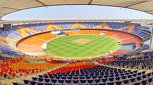
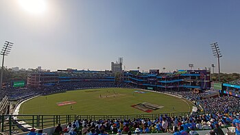
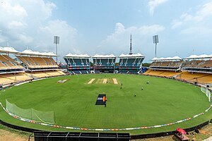
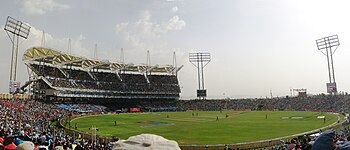
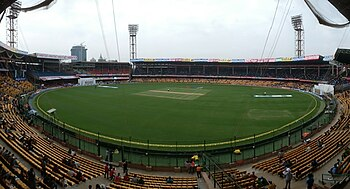
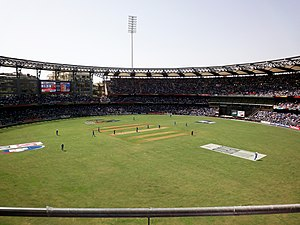

ICC WORLD CUP - 2023

| Sr.no | Players | Sr.no | Players | 1 | Jonny Bairstow | 1 | Devon Conway | 2 | Dawid Malan | 2 | Will Young | 3 | Joe Root | 3 | Rachin Ravindra | 4 | harry Brook | 4 | Daryl Mitchell | 5 | Jos Butler(C) | 5 | Tom Latham(C) | 6 | Liam Livingstone | 6 | Glenn Phillips |
| 7 | Moeen Ali | 7 | Mark Chapman |
| 8 | Sam Curran | 8 | James Neesham |
| 9 | Chris Woakes | 9 | Mitchell Santner |
| 10 | Adli Rashid | 10 | Matt Henry |
| 11 | Mark Wood | 11 | Trent Boult |
| 12 | Ben Stokes | 12 | Lockie Ferguson |
| 13 | Gus Atkison | 13 | Ish Sodhi |
| 14 | Reece Topley | 14 | Tim Southee |
| 15 | David Wiley | 15 |
Narendra Modi Stadium, Ahmedabad
The Narendra Modi Stadium is an international cricket stadium located in Ahmedabad,Gujarat, a state in west India.
With a total capacity of 132,000,it is the world's largest stadium. The stadium, owned by the Gujarat Cricket Association,
hosts both domestic and international cricket matches.
It is recognized as one of the world's premier cricket venues.The stadium has hosted several high-profile matches,
such as the 2023 One Day International World Cup final.It is named after the 14th Prime Minister of India, Narendra Modi.
This stadium replaced the Sardar Vallabhbhai Patel Stadium, Ahmedabad which used to host domestic and international cricket
in the city until its demolition in 2015. Sardar Patel Stadium was one of the most prominent cricket venues, having hosted
matches during the 1987, 1996, and 2011 ICC World Cups.[20][21][22] In 2014, it was decided that a new stadium should be built
on the same plot.[23] The new stadium, originally named Motera Stadium, was designed by Australia's design firm Populous and
built by Larsen and Toubro. It took five years to build, at an estimated cost of ₹800 crore (US$96 million). Once completed,
the new arena replaced the Melbourne Cricket Ground as the world's largest cricket stadium. The stadium has four dressing rooms,
11 center pitches, and two practice grounds. The practice grounds can additionally serve as venues for domestic matches.
 vs
vs
| Sr.no | Players | Sr.no | Players | 1 | Imam-ul-Haq | 1 | Vikramjit Singh | 2 | Fakhar Aman | 2 | Max ODowd | 3 | Babar Azam(c) | 3 | Colin Ackermann | 4 | Mohammad Rizwan | 4 | Scott Edwards(C) | 5 | Saud Shakeel | 5 | Bas De Leede | 6 | Iftikhar ahmed | 6 | Teja Nidamanuru |
| 7 | Shadab Khan | 7 | Saqib Zulfiqar |
| 8 | Mohammad nawaz | 8 | Logan Van Beek |
| 9 | Hasan Ali | 9 | Roelof Van Der Merwe |
| 10 | Shaheen Afridi | 10 | Aryan Dutt |
| 11 | Haris Rauf | 11 | Paul Van Meekeren |
| 12 | Mehammad Wasim Jr | 12 | Weasley Barresi |
| 13 | Agha salman | 13 | Ryan Klein |
| 14 | Usama Mir | 14 | Sybrand Engelbrecht |
| 15 | Abdullah Shafique | 15 | Shariz Ahmad |
Rajiv Gandhi International Stadium, Hyderabad

The Rajiv Gandhi International Cricket Stadium, commonly known as Uppal Stadium, is an international cricket
stadium in Hyderabad, Telangana, India. It is owned and operated by Hyderabad Cricket Association (HCA).
It is the home ground of Hyderabad cricket team and Hyderabad women's cricket team.
Located in the eastern suburb of Uppal, it has a seating capacity of 39,200 and extends across 15 acres of land.
It serves as the home ground the IPL team Sunrisers Hyderabad. As of 13 October 2024, it has hosted 6 Tests, 10 ODIs,
and 3 T20Is. The stadium hosted the final of 2017 IPL and the final of the 2019 IPL. The stadium hosted its first ICC
event in October 2023 during the 2023 Cricket World Cup.
It is renamed after the former prime minister of India Rajiv Gandhi.
 vs
vs 
| Sr.no | Players | Sr.no | Players | 1 | Tanzid Hasan | 1 | Rahmanullah Gurbaz | 2 | Litton Das | 2 | Ibrahim Zadran | 3 | Najmul Hossain Shanto | 3 | Rahmat Shahn | 4 | Mehidy Hasan Miraz | 4 | Hashmatullah Shahidi | 5 | Shakib Al Hasan | 5 | Mohammad Nabi | 6 | Mushfiqur Rahim | 6 | Najibullah Zadran |
| 7 | Towhid Hridoy | 7 | Azmatullah Omarzai |
| 8 | Mahmudullah | 8 | Rashid Khan |
| 9 | Taskin Ahmed | 9 | Mujeeb Ur Rahman |
| 10 | Shoriful Islam | 10 | Naveen-ul-Haq |
| 11 | Mustafizur Rahman | 11 | Fazalhaq Farooqi |
| 12 | Mahedi Hasan | 12 | Noor Ahmad |
| 13 | asum Ahmed | 13 | Riaz Hassan |
| 14 | Hasan Mahmud | 14 | Abdul Rahman |
| 15 | Tanzim Hasan Sakib | 15 | Ikram Alikhil |
Himachal Pradesh Cricket Association Stadium, Dharamsala

Himachal Pradesh Cricket Association Stadium (abbreviated as the HPCA Stadium) is an international cricket stadium in Dharamshala
hill station of Himachal Pradesh, India. The stadium is the home ground of Himachal Pradesh cricket team, Himachal Pradesh women's
cricket team and headquarter of Himachal Pradesh Cricket Association, the governing body of cricket in Himachal Pradesh state.
It hosted 5 matches of 2023 Cricket World Cup, including New Zealand v India.[3] However the stadium was accused of bad outfield and
players played with potential risk of being injured. The stadium served as the home ground for the Himachal Pradesh cricket team for Ranji
Trophy matches and other domestic matches. The stadium also hosted some IPL matches as a home stadium for Punjab Kings. The picturesque venue
is unique in India as it is situated at an altitude of 1,457 m above sea level and has snow-capped Himalayan mountains in the background.
Getting to Dharamsala from the nearby Kangra Airport, which is about 8 kilometres away through the hilly terrain and the harsh winters,
 vs
vs 
| Sr.no | Players | Sr.no | Players | 1 | Quinton de kock | 1 | kusal perera | 2 | temba bavuma | 2 | pathum nissnka | 3 | Rassie van der | 3 | kusal mendis | 4 | Aiden markram | 4 | sadeera samarawickrma | 5 | Heinrich klaasen | 5 | charith salanka | 6 | david miller | 6 | dhanjaya de silva |
| 7 | Marco jansen | 7 | dasun shanaka |
| 8 | gerald coetzee | 8 | dunith wellalage |
| 9 | keshav maharaj | 9 | maheesha parthirana |
| 10 | lungi ngidi | 10 | dilshan amdushanka |
| 11 | kagiso rababa | 11 | kasun rajitha |
| 12 | andile phehlukwayo | 12 | dimuth karunaratne |
| 13 | lizaad williams | 13 | lahiru kumara |
| 14 | tabariz shamsi | 14 | dushan hemantha |
| 15 | reeza hendricks | 15 | mahesh theekshana |
Arun Jaitley Stadium
The Arun Jaitley Stadium (formally Feroz Shah Kotla Stadium) is a cricket stadium owned and operated by the Delhi & District Cricket Association (DDCA) and located on Bahadur Shah Zafar Marg, New Delhi.[2][3] It was established in 1883 as the Feroz Shah Kotla Stadium, and named after the nearby Kotla fort. It is the second oldest functional international cricket stadium in India, after the Eden Gardens of Kolkata. As of 25 October 2019, it has hosted 36 Tests, 29 ODIs and 6 T20I. In a 2017 felicitation ceremony, the DDCA named four stands of the stadium after former India captain Bishan Singh Bedi, former India all-rounder Mohinder Amarnath, former India and Delhi opener Gautam Gambhir. The home team's dressing room was named after Raman Lamba and the away dressing room after Prakash Bhandari. On 12 September 2019, the stadium was renamed in memory of former DDCA President and Finance Minister Arun Jaitley, after his death on 24 August 2019. The stadium was officially renamed at a function that took place on 12 September 2019. One of the stands of the stadium was named after former Indian captain Virat Kohli on the same date. The name change has been criticised by former Indian captain Bishan Singh Bedi.[5] After announcing the name change, DDCA clarified that only the stadium had been renamed and that the ground would be still called the Feroz Shah Kotla Ground.
 vs
vs 
| Sr.no | Players | Sr.no | Players |
| 1 | Rohit Sharma | 1 | David Warner |
| 2 | Virat Kohli | 2 | Steve Smith |
| 3 | Shubman Gill | 3 | Travis Head |
| 4 | KL Rahul | 4 | Alex Carey |
| 5 | Hardik Pandya | 5 | Glenn Maxwell |
| 6 | Ravindra Jadeja | 6 | Marcus Stoinis |
| 7 | Jasprit Bumrah | 7 | Mitchell Starc |
| 8 | Mohammed Siraj | 8 | Josh Hazlewood |
| 9 | Kuldeep Yadav | 9 | Adam Zampa |
| 10 | Shardul Thakur | 10 | Cameron Green |
| 11 | Suryakumar Yadav | 11 | Marnus Labuschagne |
| 12 | Ishan Kishan | 12 | Pat Cummins |
| 13 | Axar Patel | 13 | Sean Abbott |
| 14 | Ruturaj Gaikwad | 14 | Mitchell Marsh |
| 15 | Prasidh Krishna | 15 | Matthew Short |
M. A. Chidambaram Stadium
M. A. Chidambaram Stadium, commonly known as the Chepauk Stadium, is a cricket stadium in Chepauk, Chennai.
It is named after former BCCI president M. A. Chidambaram, and is operated by the Tamil Nadu Cricket Association.
It was established in 1916 and is the second oldest international cricket stadium in the country that is still in use after the Eden Gardens.
It hosts matches of the Indian cricket team and the Indian women's cricket team apart from matches during major international cricketing events.
It serves as the home ground of the Tamil Nadu cricket team and Tamil Nadu women's cricket team for domestic matches.
The Indian Premier League (IPL) team Chennai Super Kings plays its home matches at the stadium and the venue hosted the finals of the IPL in 2011, 2012, and 2024.
It is also used as a venue for the Tamil Nadu Premier League. Chepauk hosted its first cricket test match in February 1934 during England's tour of India.
It subsequently hosted the first match of the inaugural Ranji Trophy in November of the same year. The India cricket team recorded its first test victory in 1952 against England at the venue.
The venue was the host of the second ever tied test match in the history of the game during Australia's tour in 1986.
vs
| Sr.no | Players | Sr.no | Players | 1 | Kane Williamson | 1 | Scott Edwards |
| 2 | Devon Conway | 2 | Max O'Dowd |
| 3 | Tom Latham | 3 | Vikramjit Singh |
| 4 | Daryl Mitchell | 4 | Bas de Leede |
| 5 | Glenn Phillips | 5 | Colin Ackermann |
| 6 | Rachin Ravindra | 6 | Teja Nidamanuru |
| 7 | Mitchell Santner | 7 | Logan van Beek |
| 8 | Trent Boult | 8 | Paul van Meekeren |
| 9 | Tim Southee | 9 | Fred Klaassen |
| 10 | Lockie Ferguson | 10 | Shariz Ahmad |
| 11 | Henry Nicholls | 11 | Roelof van der Merwe |
| 12 | Mark Chapman | 12 | Aryan Dutt |
| 13 | Michael Bracewell | 13 | Musa Ahmad |
| 14 | Jimmy Neesham | 14 | Ryan Klein |
| 15 | Blair Tickner | 15 | Saqib Zulfiqar |
Rajiv Gandhi International Stadium, Hyderabad
The Rajiv Gandhi International Cricket Stadium, commonly known as Uppal Stadium, is an international cricket
stadium in Hyderabad, Telangana, India. It is owned and operated by Hyderabad Cricket Association (HCA).
It is the home ground of Hyderabad cricket team and Hyderabad women's cricket team.
Located in the eastern suburb of Uppal, it has a seating capacity of 39,200 and extends across 15 acres of land.
It serves as the home ground the IPL team Sunrisers Hyderabad. As of 13 October 2024, it has hosted 6 Tests, 10 ODIs,
and 3 T20Is. The stadium hosted the final of 2017 IPL and the final of the 2019 IPL. The stadium hosted its first ICC
event in October 2023 during the 2023 Cricket World Cup.
It is renamed after the former prime minister of India Rajiv Gandhi.

| Sr.no | Players | Sr.no | Players | 1 | Jos Buttler | 1 | Shakib Al Hasan |
| 2 | Jonny Bairstow | 2 | Liton Das |
| 3 | Joe Root | 3 | Tamim Iqbal |
| 4 | Harry Brook | 4 | Mushfiqur Rahim |
| 5 | Ben Stokes | 5 | Mahmudullah |
| 6 | Moeen Ali | 6 | Taskin Ahmed |
| 7 | Sam Curran | 7 | Mehidy Hasan Miraz |
| 8 | Chris Woakes | 8 | Mustafizur Rahman |
| 9 | Adil Rashid | 9 | Nasum Ahmed |
| 10 | Mark Wood | 10 | Shoriful Islam |
| 11 | David Willey | 11 | Ebadot Hossain |
| 12 | Reece Topley | 12 | Afif Hossain |
| 13 | Liam Livingstone | 13 | Yasir Ali |
| 14 | Jason Roy | 14 | Soumya Sarkar |
| 15 | Will Jacks | 15 | Najmul Hossain Shanto |
Himachal Pradesh Cricket Association Stadium, Dharamsala
Himachal Pradesh Cricket Association Stadium (abbreviated as the HPCA Stadium) is an international cricket stadium in Dharamshala
hill station of Himachal Pradesh, India. The stadium is the home ground of Himachal Pradesh cricket team, Himachal Pradesh women's
cricket team and headquarter of Himachal Pradesh Cricket Association, the governing body of cricket in Himachal Pradesh state.
It hosted 5 matches of 2023 Cricket World Cup, including New Zealand v India.[3] However the stadium was accused of bad outfield and
players played with potential risk of being injured. The stadium served as the home ground for the Himachal Pradesh cricket team for Ranji
Trophy matches and other domestic matches. The stadium also hosted some IPL matches as a home stadium for Punjab Kings. The picturesque venue
is unique in India as it is situated at an altitude of 1,457 m above sea level and has snow-capped Himalayan mountains in the background.
Getting to Dharamsala from the nearby Kangra Airport, which is about 8 kilometres away through the hilly terrain and the harsh winters,
 vs
vs 
| Sr.no | Players | Sr.no | Players | 1 | Babar Azam | 1 | Dasun Shanaka |
| 2 | Fakhar Zaman | 2 | Kusal Mendis |
| 3 | Imam-ul-Haq | 3 | Pathum Nissanka |
| 4 | Mohammad Rizwan | 4 | Charith Asalanka |
| 5 | Shadab Khan | 5 | Dhananjaya de Silva |
| 6 | Shaheen Afridi | 6 | Maheesh Theekshana |
| 7 | Haris Rauf | 7 | Kasun Rajitha |
| 8 | Naseem Shah | 8 | Matheesha Pathirana |
| 9 | Iftikhar Ahmed | 9 | Wanindu Hasaranga |
| 10 | Mohammad Nawaz | 10 | Dimuth Karunaratne |
| 11 | Usama Mir | 11 | Lahiru Kumara |
| 12 | Salman Ali Agha | 12 | Angelo Mathews |
| 13 | Abdullah Shafique | 13 | Sadeera Samarawickrama |
| 14 | Hassan Ali | 14 | Avishka Fernando |
| 15 | Saim Ayub | 15 | Chamika Karunaratne |
Rajiv Gandhi International Stadium, Hyderabad
The Rajiv Gandhi International Cricket Stadium, commonly known as Uppal Stadium, is an international cricket
stadium in Hyderabad, Telangana, India. It is owned and operated by Hyderabad Cricket Association (HCA).
It is the home ground of Hyderabad cricket team and Hyderabad women's cricket team.
Located in the eastern suburb of Uppal, it has a seating capacity of 39,200 and extends across 15 acres of land.
It serves as the home ground the IPL team Sunrisers Hyderabad. As of 13 October 2024, it has hosted 6 Tests, 10 ODIs,
and 3 T20Is. The stadium hosted the final of 2017 IPL and the final of the 2019 IPL. The stadium hosted its first ICC
event in October 2023 during the 2023 Cricket World Cup.
It is renamed after the former prime minister of India Rajiv Gandhi.
vs
| Sr.no | Players | Sr.no | Players | 1 | Rohit Sharma | 1 | Hashmatullah Shahidi |
| 2 | Virat Kohli | 2 | Rahmanullah Gurbaz |
| 3 | Shubman Gill | 3 | Ibrahim Zadran |
| 4 | KL Rahul | 4 | Najibullah Zadran |
| 5 | Hardik Pandya | 5 | Mohammad Nabi |
| 6 | Ravindra Jadeja | 6 | Rashid Khan |
| 7 | Jasprit Bumrah | 7 | Mujeeb Ur Rahman |
| 8 | Mohammed Shami | 8 | Fazalhaq Farooqi |
| 9 | Shardul Thakur | 9 | Azmatullah Omarzai |
| 10 | Kuldeep Yadav | 10 | Ikram Alikhil |
| 11 | Suryakumar Yadav | 11 | Gulbadin Naib |
| 12 | Ishan Kishan | 12 | Rahmat Shah |
| 13 | Axar Patel | 13 | Karim Janat |
| 14 | Yuzvendra Chahal | 14 | Shafiqullah Ghafari |
| 15 | Washington Sundar | 15 | Zahir Khan |
Arun Jaitley Stadium
The Arun Jaitley Stadium (formally Feroz Shah Kotla Stadium) is a cricket stadium owned and operated by the Delhi & District Cricket Association (DDCA) and located on Bahadur Shah Zafar Marg, New Delhi.[2][3] It was established in 1883 as the Feroz Shah Kotla Stadium, and named after the nearby Kotla fort. It is the second oldest functional international cricket stadium in India, after the Eden Gardens of Kolkata. As of 25 October 2019, it has hosted 36 Tests, 29 ODIs and 6 T20I. In a 2017 felicitation ceremony, the DDCA named four stands of the stadium after former India captain Bishan Singh Bedi, former India all-rounder Mohinder Amarnath, former India and Delhi opener Gautam Gambhir. The home team's dressing room was named after Raman Lamba and the away dressing room after Prakash Bhandari. On 12 September 2019, the stadium was renamed in memory of former DDCA President and Finance Minister Arun Jaitley, after his death on 24 August 2019. The stadium was officially renamed at a function that took place on 12 September 2019. One of the stands of the stadium was named after former Indian captain Virat Kohli on the same date. The name change has been criticised by former Indian captain Bishan Singh Bedi.[5] After announcing the name change, DDCA clarified that only the stadium had been renamed and that the ground would be still called the Feroz Shah Kotla Ground.
vs
| Sr.no | Players | Sr.no | Players |
| 1 | David Warner | 1 | Quinton de Kock |
| 2 | Mitchell Marsh | 2 | Rassie van der Dussen |
| 3 | Steve Smith | 3 | Aiden Markram |
| 4 | Travis Head | 4 | David Miller |
| 5 | Glenn Maxwell | 5 | Heinrich Klaasen |
| 6 | Alex Carey | 6 | Marco Jansen |
| 7 | Pat Cummins | 7 | Kagiso Rabada |
| 8 | Mitchell Starc | 8 | Lungi Ngidi |
| 9 | Josh Hazlewood | 9 | Anrich Nortje |
| 10 | Adam Zampa | 10 | Tabraiz Shamsi |
| 11 | Cameron Green | 11 | Andile Phehlukwayo |
| 12 | Marcus Stoinis | 12 | Keshav Maharaj |
| 13 | Matthew Wade | 13 | Gerald Coetzee |
| 14 | Ashton Agar | 14 | Reeza Hendricks |
| 15 | Josh Inglis | 15 | Lizaad Williams |
Bharat Ratn Shri Atal Bihari Vajpayee (BRSABV) Ekana Cricket Stadium
 Ekana Cricket Stadium.jpg)
Ekana Cricket Stadium, also known as Bharat Ratna Shri Atal Bihari Vajpayee (BRSABV) Ekana Cricket Stadium or Ekana Sports
City,[4][5] is an international cricket stadium in Lucknow, India. The arena has a seating capacity of 50,000,[2]
and is the fifth largest international cricket stadium of India.[6] In 2018, the stadium was renamed after India's 10th
Prime Minister Atal Bihari Vajpayee. It has the longest straight boundaries in comparison to all the stadiums in India.
It is the home ground of Uttar Pradesh cricket team, UP women's cricket team and IPL franchise Lucknow Super Giants.
In 2019, Afghanistan cricket team used it as their home ground.[9] K. D. Singh Babu Stadium used to host international cricket
matches in Lucknow before the venue was built.The arena hosted the five matches of the 2023 Men's Cricket World Cup.
vs
| Sr.no | Players | Sr.no | Players |
| 1 | Jos Buttler | 1 | Shakib Al Hasan |
| 2 | Jonny Bairstow | 2 | Liton Das |
| 3 | Joe Root | 3 | Najmul Hossain Shanto |
| 4 | Ben Stokes | 4 | Mushfiqur Rahim |
| 5 | Harry Brook | 5 | Mahmudullah |
| 6 | Moeen Ali | 6 | Mehidy Hasan Miraz |
| 7 | Chris Woakes | 7 | Taskin Ahmed |
| 8 | Mark Wood | 8 | Mustafizur Rahman |
| 9 | Adil Rashid | 9 | Shoriful Islam |
| 10 | Sam Curran | 10 | Tanzid Hasan |
| 11 | Liam Livingstone | 11 | Hasan Mahmud |
| 12 | David Willey | 12 | Afif Hossain |
| 13 | Dawid Malan | 13 | Towhid Hridoy |
| 14 | Reece Topley | 14 | Nasum Ahmed |
| 15 | Will Jacks | 15 | Nurul Hasan |
M. A. Chidambaram Stadium
M. A. Chidambaram Stadium, commonly known as the Chepauk Stadium, is a cricket stadium in Chepauk, Chennai.
It is named after former BCCI president M. A. Chidambaram, and is operated by the Tamil Nadu Cricket Association.
It was established in 1916 and is the second oldest international cricket stadium in the country that is still in use after the Eden Gardens.
It hosts matches of the Indian cricket team and the Indian women's cricket team apart from matches during major international cricketing events.
It serves as the home ground of the Tamil Nadu cricket team and Tamil Nadu women's cricket team for domestic matches.
The Indian Premier League (IPL) team Chennai Super Kings plays its home matches at the stadium and the venue hosted the finals of the IPL in 2011, 2012, and 2024.
It is also used as a venue for the Tamil Nadu Premier League. Chepauk hosted its first cricket test match in February 1934 during England's tour of India.
It subsequently hosted the first match of the inaugural Ranji Trophy in November of the same year. The India cricket team recorded its first test victory in 1952 against England at the venue.
The venue was the host of the second ever tied test match in the history of the game during Australia's tour in 1986.
vs
| Sr.no | Players | Sr.no | Players |
| 1 | David Warner | 1 | Quinton de Kock |
| 2 | Mitchell Marsh | 2 | Temba Bavuma |
| 3 | Steven Smith | 3 | Rassie van der Dussen |
| 4 | Travis Head | 4 | Aiden Markram |
| 5 | Marcus Stoinis | 5 | David Miller |
| 6 | Glenn Maxwell | 6 | Heinrich Klaasen |
| 7 | Alex Carey | 7 | Andile Phehlukwayo |
| 8 | Pat Cummins | 8 | Keshav Maharaj |
| 9 | Mitchell Starc | 9 | Wayne Parnell |
| 10 | Josh Hazlewood | 10 | Marco Jansen |
| 11 | Adam Zampa | 11 | Gerald Coetzee |
| 12 | Josh Inglis | 12 | Tabraiz Shamsi |
| 13 | Cameron Green | 13 | Faf du Plessis |
| 14 | Nathan Lyon | 14 | Rory Kleinveldt |
| 15 | Daniel Sams | 15 | Henry Davids |
The Narendra Modi Stadium
The Narendra Modi Stadium is an international cricket stadium located in Ahmedabad,Gujarat, a state in west India.
With a total capacity of 132,000,it is the world's largest stadium. The stadium, owned by the Gujarat Cricket Association,
hosts both domestic and international cricket matches.
It is recognized as one of the world's premier cricket venues.The stadium has hosted several high-profile matches,
such as the 2023 One Day International World Cup final.It is named after the 14th Prime Minister of India, Narendra Modi.
This stadium replaced the Sardar Vallabhbhai Patel Stadium, Ahmedabad which used to host domestic and international cricket
in the city until its demolition in 2015. Sardar Patel Stadium was one of the most prominent cricket venues, having hosted
matches during the 1987, 1996, and 2011 ICC World Cups.[20][21][22] In 2014, it was decided that a new stadium should be built
on the same plot.[23] The new stadium, originally named Motera Stadium, was designed by Australia's design firm Populous and
built by Larsen and Toubro. It took five years to build, at an estimated cost of ₹800 crore (US$96 million). Once completed,
the new arena replaced the Melbourne Cricket Ground as the world's largest cricket stadium. The stadium has four dressing rooms,
11 center pitches, and two practice grounds. The practice grounds can additionally serve as venues for domestic matches.
| Sr.no | Players | Sr.no | Players |
| 1 | Jos Buttler | 1 | Hashmatullah Shahidi |
| 2 | Jonny Bairstow | 2 | Rahmat Shah |
| 3 | Joe Root | 3 | Rashid Khan |
| 4 | Ben Stokes | 4 | Mohammad Nabi |
| 5 | Harry Brook | 5 | Najibullah Zadran |
| 6 | Moeen Ali | 6 | Karim Janat |
| 7 | Chris Woakes | 7 | Azmatullah Omarzai |
| 8 | Mark Wood | 8 | Fazalhaq Farooqi |
| 9 | Adil Rashid | 9 | Mohammad Shahzad |
| 10 | Sam Curran | 10 | Qais Ahmad |
| 11 | Liam Livingstone | 11 | Rashid Khan |
| 12 | David Willey | 12 | Gulbadin Naib |
| 13 | Dawid Malan | 13 | Shapoor Zadran |
| 14 | Reece Topley | 14 | Mohammad Ismail |
| 15 | Will Jacks | 15 | Hameed Shahid |
Arun Jaitley Stadium
The Arun Jaitley Stadium (formally Feroz Shah Kotla Stadium) is a cricket stadium owned and operated by the Delhi & District
Cricket Association (DDCA) and located on Bahadur Shah Zafar Marg, New Delhi.[2][3] It was established in 1883 as the Feroz
Shah Kotla Stadium, and named after the nearby Kotla fort. It is the second oldest functional international cricket stadium in
India, after the Eden Gardens of Kolkata. As of 25 October 2019, it has hosted 36 Tests, 29 ODIs and 6 T20I.
In a 2017 felicitation ceremony, the DDCA named four stands of the stadium after former India captain Bishan Singh Bedi, former
India all-rounder Mohinder Amarnath, former India and Delhi opener Gautam Gambhir. The home team's dressing room was named after Raman
Lamba and the away dressing room after Prakash Bhandari.
On 12 September 2019, the stadium was renamed in memory of former DDCA President and Finance Minister Arun Jaitley, after his death on 24 August 2019.
The stadium was officially renamed at a function that took place on 12 September 2019. One of the stands of the stadium was named after former Indian captain
Virat Kohli on the same date. The name change has been criticised by former Indian captain Bishan Singh Bedi.[5] After announcing the name change, DDCA clarified
that only the stadium had been renamed and that the ground would be still called the Feroz Shah Kotla Ground.
vs
| Sr.no | Players | Sr.no | Players |
| 1 | David Warner | 1 | Kusal Perera |
| 2 | Mitchell Marsh | 2 | Dimuth Karunaratne |
| 3 | Steven Smith | 3 | Pathum Nissanka |
| 4 | Travis Head | 4 | Charith Asalanka |
| 5 | Marcus Stoinis | 5 | Avishka Fernando |
| 6 | Glenn Maxwell | 6 | Dasun Shanaka |
| 7 | Alex Carey | 7 | Wanindu Hasaranga |
| 8 | Pat Cummins | 8 | Maheesh Theekshana |
| 9 | Mitchell Starc | 9 | Kasun Rajitha |
| 10 | Josh Hazlewood | 10 | Chamika Karunaratne |
| 11 | Adam Zampa | 11 | Vishwa Fernando |
| 12 | Josh Inglis | 12 | Roshen Silva |
| 13 | Cameron Green | 13 | Ramesh Mendis |
| 14 | Nathan Lyon | 14 | Jeffrey Vandersay |
| 15 | Daniel Sams | 15 | Angelo Mathews |
Bharat Ratn Shri Atal Bihari Vajpayee (BRSABV) Ekana Cricket Stadium
Ekana Cricket Stadium, also known as Bharat Ratna Shri Atal Bihari Vajpayee (BRSABV) Ekana Cricket Stadium or Ekana Sports
City,[4][5] is an international cricket stadium in Lucknow, India. The arena has a seating capacity of 50,000,[2]
and is the fifth largest international cricket stadium of India.[6] In 2018, the stadium was renamed after India's 10th
Prime Minister Atal Bihari Vajpayee. It has the longest straight boundaries in comparison to all the stadiums in India.
It is the home ground of Uttar Pradesh cricket team, UP women's cricket team and IPL franchise Lucknow Super Giants.
In 2019, Afghanistan cricket team used it as their home ground.[9] K. D. Singh Babu Stadium used to host international cricket
matches in Lucknow before the venue was built.The arena hosted the five matches of the 2023 Men's Cricket World Cup.
vs
| Sr.no | Players | Sr.no | Players |
| 1 | Quinton de Kock | 1 | Max O'Dowd |
| 2 | Temba Bavuma | 2 | Stephan Myburgh |
| 3 | Rassie van der Dussen | 3 | Bas de Leede |
| 4 | Aiden Markram | 4 | Tom Cooper |
| 5 | David Miller | 5 | Colin Ackermann |
| 6 | Heinrich Klaasen | 6 | Scott Edwards |
| 7 | Andile Phehlukwayo | 7 | Wesley Barresi |
| 8 | Keshav Maharaj | 8 | Paul van Meekeren |
| 9 | Wayne Parnell | 9 | Roelof van der Merwe |
| 10 | Marco Jansen | 10 | Fred Klaassen |
| 11 | Gerald Coetzee | 11 | Vivian Kingma |
| 12 | Tabraiz Shamsi | 12 | Ryan ten Doeschate |
| 13 | Faf du Plessis | 13 | Logan van Beek |
| 14 | Rory Kleinveldt | 14 | Sharne Warne |
| 15 | Henry Davids | 15 | Shaheen Shah Afridi |
Himachal Pradesh Cricket Association Stadium, Dharamsala
Himachal Pradesh Cricket Association Stadium (abbreviated as the HPCA Stadium) is an international cricket stadium in Dharamshala
hill station of Himachal Pradesh, India. The stadium is the home ground of Himachal Pradesh cricket team, Himachal Pradesh women's
cricket team and headquarter of Himachal Pradesh Cricket Association, the governing body of cricket in Himachal Pradesh state.
It hosted 5 matches of 2023 Cricket World Cup, including New Zealand v India.[3] However the stadium was accused of bad outfield and
players played with potential risk of being injured. The stadium served as the home ground for the Himachal Pradesh cricket team for Ranji
Trophy matches and other domestic matches. The stadium also hosted some IPL matches as a home stadium for Punjab Kings. The picturesque venue
is unique in India as it is situated at an altitude of 1,457 m above sea level and has snow-capped Himalayan mountains in the background.
Getting to Dharamsala from the nearby Kangra Airport, which is about 8 kilometres away through the hilly terrain and the harsh winters,
vs
| Sr.no | Players | Sr.no | Players |
| 1 | Devon Conway | 1 | Hashmatullah Shahidi |
| 2 | Finn Allen | 2 | Rahmat Shah |
| 3 | Kane Williamson | 3 | Rashid Khan |
| 4 | Tom Latham | 4 | Mohammad Nabi |
| 5 | Martin Guptill | 5 | Najibullah Zadran |
| 6 | Glenn Phillips | 6 | Karim Janat |
| 7 | James Neesham | 7 | Azmatullah Omarzai |
| 8 | Mitchell Santner | 8 | Fazalhaq Farooqi |
| 9 | Mark Chapman | 9 | Mohammad Shahzad |
| 10 | Lockie Ferguson | 10 | Qais Ahmad |
| 11 | Trent Boult | 11 | Gulbadin Naib |
| 12 | Mitchell McClenaghan | 12 | Shapoor Zadran |
| 13 | Tom Blundell | 13 | Logan van Beek |
| 14 | Ross Taylor | 14 | Ryan ten Doeschate |
| 15 | Martin Guptill | 15 | Hameed Shahid |
M. A. Chidambaram Stadium
M. A. Chidambaram Stadium, commonly known as the Chepauk Stadium, is a cricket stadium in Chepauk, Chennai.
It is named after former BCCI president M. A. Chidambaram, and is operated by the Tamil Nadu Cricket Association.
It was established in 1916 and is the second oldest international cricket stadium in the country that is still in use after the Eden Gardens.
It hosts matches of the Indian cricket team and the Indian women's cricket team apart from matches during major international cricketing events.
It serves as the home ground of the Tamil Nadu cricket team and Tamil Nadu women's cricket team for domestic matches.
The Indian Premier League (IPL) team Chennai Super Kings plays its home matches at the stadium and the venue hosted the finals of the IPL in 2011, 2012, and 2024.
It is also used as a venue for the Tamil Nadu Premier League. Chepauk hosted its first cricket test match in February 1934 during England's tour of India.
It subsequently hosted the first match of the inaugural Ranji Trophy in November of the same year. The India cricket team recorded its first test victory in 1952 against England at the venue.
The venue was the host of the second ever tied test match in the history of the game during Australia's tour in 1986.
vs
| Sr.no | Players | Sr.no | Players |
| 1 | Rohit Sharma | 1 | Shakib Al Hasan |
| 2 | Shubman Gill | 2 | Tamim Iqbal |
| 3 | Virat Kohli | 3 | Mustafizur Rahman |
| 4 | Suryakumar Yadav | 4 | Mehidy Hasan Miraz |
| 5 | KL Rahul | 5 | Litton Das |
| 6 | Hardik Pandya | 6 | Mahmudullah |
| 7 | Ravindra Jadeja | 7 | Afif Hossain |
| 8 | Ravichandran Ashwin | 8 | Shoriful Islam |
| 9 | Bhuvneshwar Kumar | 9 | Taskin Ahmed |
| 10 | Mohammad Shami | 10 | Mustafizur Rahman |
| 11 | Arshdeep Singh | 11 | Nasum Ahmed |
| 12 | Shreyas Iyer | 12 | Mahmudul Hasan Joy |
| 13 | Deepak Chahar | 13 | Shakib Al Hasan |
| 14 | Ruturaj Gaikwad | 14 | Mohammad Naim |
| 15 | Kuldeep Yadav | 15 | Rubel Hossain |
Maharashtra Cricket Association Stadium,Pune
Maharashtra Cricket Association Stadium is an international cricket stadium in Pune, Maharashtra, India.
It is owned and operated by the Maharashtra Cricket Association.It is the home ground of the Maharashtra cricket
team and Maharashtra women's cricket team, it is the headquarters of the Maharashtra Cricket Association (MCA).
The stadium is situated on the outskirts of city limit of Pune in Gahunje village near Mumbai Pune Expressway.
It is one of the premier stadiums of the country. Before its existence, Nehru Stadium of downtown Pune was the home
ground of the Maharashtra Cricket team and venue for international matches organised by MCA.
MCA stadium was designed by Michael Hopkins of Hopkins architects. Its seating capacity is 42,700. Arena's shape is
like a deep bowl.[12][13] The venue hosted its first international match in December 2012.[14] Its ground's shape is round,
with Bermuda grass surface. The ground has high-tech pop-up sprinklers.[15] Its final phase of construction is still
yet to be completed.[13] [16] It has floodlights to organise games at night.On 1 April 2012, then ICC president Sharad
Pawar inaugurated the MCA stadium.[2][17][18] The arena hosted its first first class match in December 2011, when
Himachal Pradesh played against home side Maharashtra cricket team in 2011-12 Ranji trophy edition, hosted first IPL game
(Pune Warriors v King's XI Punjab) in April 2012. MCA stadium hosted its first T20I match in December 2012 (between India-England)
and first Test in February 2017.The arena hosted 5 games of 2023 ICC World Cup including the India Bangladesh game..
vs
| Sr.no | Players | Sr.no | Players |
| 1 | David Warner | 1 | Fakhar Zaman |
| 2 | Mitchell Marsh | 2 | Imam-ul-Haq |
| 3 | Steven Smith | 3 | Babar Azam |
| 4 | Travis Head | 4 | Shadab Khan |
| 5 | Marcus Stoinis | 5 | Mohammad Rizwan |
| 6 | Glenn Maxwell | 6 | Asif Ali |
| 7 | Alex Carey | 7 | Khushdil Shah |
| 8 | Pat Cummins | 8 | Mohammad Nawaz |
| 9 | Mitchell Starc | 9 | Shaheen Shah Afridi |
| 10 | Josh Hazlewood | 10 | Haris Rauf |
| 11 | Adam Zampa | 11 | Shahnawaz Dahani |
| 12 | Josh Inglis | 12 | Usman Qadir |
| 13 | Cameron Green | 13 | Imad Wasim |
| 14 | Nathan Lyon | 14 | Mohammad Wasim Jr. |
| 15 | Daniel Sams | 15 | Shahnawaz Dahani |
M.Chinnaswamy Stadium, Bengaluru
The Mangalam Chinnaswamy Stadium, also known as the Karnataka State Cricket Association Stadium,
is a cricket stadium in the Bengaluru city of the Indian state of Karnataka. The ground is owned by the Government of Karnataka
and operated by the Karnataka State Cricket Association (KSCA). Flanked by the picturesque Cubbon Park,
Queen's Road, Cubbon and uptown MG Road, this five-decade-old stadium is situated in the heart of the city of Bangalore.
It regularly hosts Test, ODI, T20I and first-class cricket matches, as well as musical, cultural events.
The stadium is the home ground of the Karnataka state cricket team, Karnataka women's cricket team and IPL
franchise Royal Challengers Bangalore.[5] It is owned by the Government of Karnataka and has been leased out to the KSCA for a period of 100 years.
| Sr.no | Players | Sr.no | Players |
| 1 | Max O'Dowd | 1 | Kusal Perera |
| 2 | Stephan Myburgh | 2 | Dimuth Karunaratne |
| 3 | Bas de Leede | 3 | Pathum Nissanka |
| 4 | Tom Cooper | 4 | Charith Asalanka |
| 5 | Colin Ackermann | 5 | Avishka Fernando |
| 6 | Scott Edwards | 6 | Shanaka Dasun |
| 7 | Wesley Barresi | 7 | Wanindu Hasaranga |
| 8 | Paul van Meekeren | 8 | Chamika Karunaratne |
| 9 | Roelof van der Merwe | 9 | Lasith Malinga |
| 10 | Fred Klaassen | 10 | Jeffrey Vandersay |
| 11 | Ryan ten Doeschate | 11 | Isuru Udana |
| 12 | Logan van Beek | 12 | Dinesh Chandimal |
| 13 | Sharne Warne | 13 | Dasun Shanaka |
| 14 | Ryan Klein | 14 | Danushka Gunathilaka |
| 15 | Mark Jonkman | 15 | Ramesh Mendis |
Bharat Ratn Shri Atal Bihari Vajpayee (BRSABV) Ekana Cricket Stadium
Ekana Cricket Stadium, also known as Bharat Ratna Shri Atal Bihari Vajpayee (BRSABV) Ekana Cricket Stadium or Ekana Sports
City,[4][5] is an international cricket stadium in Lucknow, India. The arena has a seating capacity of 50,000,[2]
and is the fifth largest international cricket stadium of India.[6] In 2018, the stadium was renamed after India's 10th
Prime Minister Atal Bihari Vajpayee. It has the longest straight boundaries in comparison to all the stadiums in India.
It is the home ground of Uttar Pradesh cricket team, UP women's cricket team and IPL franchise Lucknow Super Giants.
In 2019, Afghanistan cricket team used it as their home ground.[9] K. D. Singh Babu Stadium used to host international cricket
matches in Lucknow before the venue was built.The arena hosted the five matches of the 2023 Men's Cricket World Cup.
| Sr.no | Players | Sr.no | Players |
| 1 | Jos Buttler | 1 | Quinton de Kock |
| 2 | Jonny Bairstow | 2 | Temba Bavuma |
| 3 | Joe Root | 3 | Aiden Markram |
| 4 | Ben Stokes | 4 | David Miller |
| 5 | Moeen Ali | 5 | Heinrich Klaasen |
| 6 | Sam Curran | 6 | Marco Jansen |
| 7 | Chris Woakes | 7 | Kagiso Rabada |
| 8 | Adil Rashid | 8 | Anrich Nortje |
| 9 | Mark Wood | 9 | Keshav Maharaj |
| 10 | David Willey | 10 | Lungi Ngidi |
| 11 | Liam Livingstone | 11 | Tabraiz Shamsi |
| 12 | Harry Brook | 12 | Reeza Hendricks |
| 13 | Jason Roy | 13 | Andile Phehlukwayo |
| 14 | Reece Topley | 14 | Rassie van der Dussen |
| 15 | Will Jacks | 15 | Gerald Coetzee |
Wankhede Stadium, Mumbai
Wankhede Stadium is an international cricket stadium in Mumbai, India.
It is owned and operated by Mumbai Cricket Association and is the home ground of the Mumbai Indians. It houses the headquarters
of the Board of Control for Cricket in India, the MCA and the Indian Premier League.The stadium is situated near
Marine Drive in the Churchgate neighbourhood. Several old cricket clubs are near the stadium, including Hindu Gymkhana,
Parsi Gymkhana and Cricket Club of India (CCI).The stadium has been host to numerous high-profile cricket matches in the
past, most notably the 2011 Cricket World Cup Final, in which India defeated Sri Lanka and became the first country
to win the Cricket World Cup on home soil. It hosted the last match of Sachin Tendulkar's international career.
vs
| Sr.no | Players | Sr.no | Players |
| 1 | Rohit Sharma | 1 | Devon Conway |
| 2 | Shubman Gill | 2 | Finn Allen |
| 3 | Virat Kohli | 3 | Kane Williamson |
| 4 | Suryakumar Yadav | 4 | Daryl Mitchell |
| 5 | KL Rahul | 5 | Tom Latham |
| 6 | Hardik Pandya | 6 | Glenn Phillips |
| 7 | Ravindra Jadeja | 7 | Rachin Ravindra |
| 8 | Ravichandran Ashwin | 8 | Mitchell Santner |
| 9 | Mohammad Shami | 9 | Trent Boult |
| 10 | Kuldeep Yadav | 10 | Lockie Ferguson |
| 11 | Jasprit Bumrah | 11 | Matt Henry |
| 12 | Shreyas Iyer | 12 | Tim Southee |
| 13 | Axar Patel | 13 | Mark Chapman |
| 14 | Deepak Chahar | 14 | Jimmy Neesham |
| 15 | Ruturaj Gaikwad | 15 | Michael Bracewell |
Himachal Pradesh Cricket Association Stadium, Dharamsala
Himachal Pradesh Cricket Association Stadium (abbreviated as the HPCA Stadium) is an international cricket stadium in Dharamshala
hill station of Himachal Pradesh, India. The stadium is the home ground of Himachal Pradesh cricket team, Himachal Pradesh women's
cricket team and headquarter of Himachal Pradesh Cricket Association, the governing body of cricket in Himachal Pradesh state.
It hosted 5 matches of 2023 Cricket World Cup, including New Zealand v India.[3] However the stadium was accused of bad outfield and
players played with potential risk of being injured. The stadium served as the home ground for the Himachal Pradesh cricket team for Ranji
Trophy matches and other domestic matches. The stadium also hosted some IPL matches as a home stadium for Punjab Kings. The picturesque venue
is unique in India as it is situated at an altitude of 1,457 m above sea level and has snow-capped Himalayan mountains in the background.
Getting to Dharamsala from the nearby Kangra Airport, which is about 8 kilometres away through the hilly terrain and the harsh winters,
vs
| Sr.no | Players | Sr.no | Players |
| 1 | Babar Azam | 1 | Rahmanullah Gurbaz |
| 2 | Imam-ul-Haq | 2 | Ibrahim Zadran |
| 3 | Fakhar Zaman | 3 | Rahmat Shah |
| 4 | Mohammad Rizwan | 4 | Hashmatullah Shahidi |
| 5 | Shadab Khan | 5 | Najibullah Zadran |
| 6 | Mohammad Nawaz | 6 | Mohammad Nabi |
| 7 | Shaheen Shah Afridi | 7 | Rashid Khan |
| 8 | Haris Rauf | 8 | Mujeeb Ur Rahman |
| 9 | Hasan Ali | 9 | Fazalhaq Farooqi |
| 10 | Naseem Shah | 10 | Azmatullah Omarzai |
| 11 | Usama Mir | 11 | Ikram Alikhil |
| 12 | Agha Salman | 12 | Sharafuddin Ashraf |
| 13 | Abdullah Shafique | 13 | Gulbadin Naib |
| 14 | Mohammad Haris | 14 | Noor Ahmad |
| 15 | Iftikhar Ahmed | 15 | Zahir Khan |
M. A. Chidambaram Stadium
M. A. Chidambaram Stadium, commonly known as the Chepauk Stadium, is a cricket stadium in Chepauk, Chennai.
It is named after former BCCI president M. A. Chidambaram, and is operated by the Tamil Nadu Cricket Association.
It was established in 1916 and is the second oldest international cricket stadium in the country that is still in use after the Eden Gardens.
It hosts matches of the Indian cricket team and the Indian women's cricket team apart from matches during major international cricketing events.
It serves as the home ground of the Tamil Nadu cricket team and Tamil Nadu women's cricket team for domestic matches.
The Indian Premier League (IPL) team Chennai Super Kings plays its home matches at the stadium and the venue hosted the finals of the IPL in 2011, 2012, and 2024.
It is also used as a venue for the Tamil Nadu Premier League. Chepauk hosted its first cricket test match in February 1934 during England's tour of India.
It subsequently hosted the first match of the inaugural Ranji Trophy in November of the same year. The India cricket team recorded its first test victory in 1952 against England at the venue.
The venue was the host of the second ever tied test match in the history of the game during Australia's tour in 1986.
vs
| Sr.no | Players | Sr.no | Players |
| 1 | Quinton de Kock | 1 | Tamim Iqbal |
| 2 | Temba Bavuma | 2 | Liton Das |
| 3 | Rassie van der Dussen | 3 | Najmul Hossain Shanto |
| 4 | Aiden Markram | 4 | Shakib Al Hasan |
| 5 | David Miller | 5 | Mushfiqur Rahim |
| 6 | Heinrich Klaasen | 6 | Mahmudullah |
| 7 | Marco Jansen | 7 | Afif Hossain |
| 8 | Kagiso Rabada | 8 | Mehidy Hasan Miraz |
| 9 | Anrich Nortje | 9 | Taskin Ahmed |
| 10 | Keshav Maharaj | 10 | Mustafizur Rahman |
| 11 | Lungi Ngidi | 11 | Shoriful Islam |
| 12 | Reeza Hendricks | 12 | Nasum Ahmed |
| 13 | Gerald Coetzee | 13 | Yasir Ali |
| 14 | Tristan Stubbs | 14 | Mohammad Naim |
| 15 | Andile Phehlukwayo | 15 | Ebadot Hossain |
Wankhede Stadium, Mumbai
Wankhede Stadium is an international cricket stadium in Mumbai, India.
It is owned and operated by Mumbai Cricket Association and is the home ground of the Mumbai Indians. It houses the headquarters
of the Board of Control for Cricket in India, the MCA and the Indian Premier League.The stadium is situated near
Marine Drive in the Churchgate neighbourhood. Several old cricket clubs are near the stadium, including Hindu Gymkhana,
Parsi Gymkhana and Cricket Club of India (CCI).The stadium has been host to numerous high-profile cricket matches in the
past, most notably the 2011 Cricket World Cup Final, in which India defeated Sri Lanka and became the first country
to win the Cricket World Cup on home soil. It hosted the last match of Sachin Tendulkar's international career.
vs
| Sr.no | Players | Sr.no | Players |
| 1 | David Warner | 1 | Max O'Dowd |
| 2 | Travis Head | 2 | Vikramjit Singh |
| 3 | Steve Smith | 3 | Colin Ackermann |
| 4 | Marnus Labuschagne | 4 | Bas de Leede |
| 5 | Mitchell Marsh | 5 | Scott Edwards |
| 6 | Alex Carey | 6 | Teja Nidamanuru |
| 7 | Glenn Maxwell | 7 | Logan van Beek |
| 8 | Pat Cummins | 8 | Roelof van der Merwe |
| 9 | Mitchell Starc | 9 | Paul van Meekeren |
| 10 | Josh Hazlewood | 10 | Shariz Ahmad |
| 11 | Adam Zampa | 11 | Fred Klaassen |
| 12 | Marcus Stoinis | 12 | Saqib Zulfiqar |
| 13 | Sean Abbott | 13 | Tom Cooper |
| 14 | Cameron Green | 14 | Aryan Dutt |
| 15 | Ashton Agar | 15 | Ryan Klein |
Arun Jaitley Stadium
The Arun Jaitley Stadium (formally Feroz Shah Kotla Stadium) is a cricket stadium owned and operated by the Delhi & District
Cricket Association (DDCA) and located on Bahadur Shah Zafar Marg, New Delhi.[2][3] It was established in 1883 as the Feroz
Shah Kotla Stadium, and named after the nearby Kotla fort. It is the second oldest functional international cricket stadium in
India, after the Eden Gardens of Kolkata. As of 25 October 2019, it has hosted 36 Tests, 29 ODIs and 6 T20I.
In a 2017 felicitation ceremony, the DDCA named four stands of the stadium after former India captain Bishan Singh Bedi, former
India all-rounder Mohinder Amarnath, former India and Delhi opener Gautam Gambhir. The home team's dressing room was named after Raman
Lamba and the away dressing room after Prakash Bhandari.
On 12 September 2019, the stadium was renamed in memory of former DDCA President and Finance Minister Arun Jaitley, after his death on 24 August 2019.
The stadium was officially renamed at a function that took place on 12 September 2019. One of the stands of the stadium was named after former Indian captain
Virat Kohli on the same date. The name change has been criticised by former Indian captain Bishan Singh Bedi.[5] After announcing the name change, DDCA clarified
that only the stadium had been renamed and that the ground would be still called the Feroz Shah Kotla Ground.
| Sr.no | Players | Sr.no | Players |
| 1 | Jos Buttler | 1 | Pathum Nissanka |
| 2 | Jonny Bairstow | 2 | Dimuth Karunaratne |
| 3 | Joe Root | 3 | Kusal Mendis |
| 4 | Ben Stokes | 4 | Sadeera Samarawickrama |
| 5 | Harry Brook | 5 | Charith Asalanka |
| 6 | Moeen Ali | 6 | Dhananjaya de Silva |
| 7 | Chris Woakes | 7 | Dasun Shanaka |
| 8 | Sam Curran | 8 | Chamika Karunaratne |
| 9 | Mark Wood | 9 | Maheesh Theekshana |
| 10 | Adil Rashid | 10 | Kasun Rajitha |
| 11 | David Willey | 11 | Lahiru Kumara |
| 12 | Liam Livingstone | 12 | Dushan Hemantha |
| 13 | Reece Topley | 13 | Matheesha Pathirana |
| 14 | Phil Salt | 14 | Binura Fernando |
| 15 | Will Jacks | 15 | Angelo Mathews |
M.Chinnaswamy Stadium, Bengaluru
The Mangalam Chinnaswamy Stadium, also known as the Karnataka State Cricket Association Stadium,
is a cricket stadium in the Bengaluru city of the Indian state of Karnataka. The ground is owned by the Government of Karnataka
and operated by the Karnataka State Cricket Association (KSCA). Flanked by the picturesque Cubbon Park,
Queen's Road, Cubbon and uptown MG Road, this five-decade-old stadium is situated in the heart of the city of Bangalore.
It regularly hosts Test, ODI, T20I and first-class cricket matches, as well as musical, cultural events.
The stadium is the home ground of the Karnataka state cricket team, Karnataka women's cricket team and IPL
franchise Royal Challengers Bangalore.[5] It is owned by the Government of Karnataka and has been leased out to the KSCA for a period of 100 years.
vs
| Sr.no | Players | Sr.no | Players |
| 1 | Babar Azam | 1 | Quinton de Kock |
| 2 | Mohammad Rizwan | 2 | Temba Bavuma |
| 3 | Fakhar Zaman | 3 | Rassie van der Dussen |
| 4 | Imam-ul-Haq | 4 | Aiden Markram |
| 5 | Shadab Khan | 5 | David Miller |
| 6 | Iftikhar Ahmed | 6 | Heinrich Klaasen |
| 7 | Mohammad Nawaz | 7 | Marco Jansen |
| 8 | Shaheen Afridi | 8 | Kagiso Rabada |
| 9 | Haris Rauf | 9 | Anrich Nortje |
| 10 | Hasan Ali | 10 | Keshav Maharaj |
| 11 | Usama Mir | 11 | Lungi Ngidi |
| 12 | Agha Salman | 12 | Reeza Hendricks |
| 13 | Mohammad Wasim | 13 | Gerald Coetzee |
| 14 | Abdullah Shafique | 14 | Tristan Stubbs |
| 15 | Saim Ayub | 15 | Andile Phehlukwayo |
M. A. Chidambaram Stadium
M. A. Chidambaram Stadium, commonly known as the Chepauk Stadium, is a cricket stadium in Chepauk, Chennai.
It is named after former BCCI president M. A. Chidambaram, and is operated by the Tamil Nadu Cricket Association.
It was established in 1916 and is the second oldest international cricket stadium in the country that is still in use after the Eden Gardens.
It hosts matches of the Indian cricket team and the Indian women's cricket team apart from matches during major international cricketing events.
It serves as the home ground of the Tamil Nadu cricket team and Tamil Nadu women's cricket team for domestic matches.
The Indian Premier League (IPL) team Chennai Super Kings plays its home matches at the stadium and the venue hosted the finals of the IPL in 2011, 2012, and 2024.
It is also used as a venue for the Tamil Nadu Premier League. Chepauk hosted its first cricket test match in February 1934 during England's tour of India.
It subsequently hosted the first match of the inaugural Ranji Trophy in November of the same year. The India cricket team recorded its first test victory in 1952 against England at the venue.
The venue was the host of the second ever tied test match in the history of the game during Australia's tour in 1986.
vs
| Sr.no | Players | Sr.no | Players |
| 1 | David Warner | 1 | Devon Conway |
| 2 | Travis Head | 2 | Finn Allen |
| 3 | Steve Smith | 3 | Kane Williamson |
| 4 | Marnus Labuschagne | 4 | Daryl Mitchell |
| 5 | Mitchell Marsh | 5 | Tom Latham |
| 6 | Alex Carey | 6 | Glenn Phillips |
| 7 | Glenn Maxwell | 7 | James Neesham |
| 8 | Pat Cummins | 8 | Mitchell Santner |
| 9 | Mitchell Starc | 9 | Trent Boult |
| 10 | Josh Hazlewood | 10 | Tim Southee |
| 11 | Adam Zampa | 11 | Lockie Ferguson |
| 12 | Marcus Stoinis | 12 | Mark Chapman |
| 13 | Sean Abbott | 13 | Rachin Ravindra |
| 14 | Cameron Green | 14 | Adam Milne |
| 15 | Ashton Agar | 15 | Will Young |
Himachal Pradesh Cricket Association Stadium, Dharamsala
Himachal Pradesh Cricket Association Stadium (abbreviated as the HPCA Stadium) is an international cricket stadium in Dharamshala
hill station of Himachal Pradesh, India. The stadium is the home ground of Himachal Pradesh cricket team, Himachal Pradesh women's
cricket team and headquarter of Himachal Pradesh Cricket Association, the governing body of cricket in Himachal Pradesh state.
It hosted 5 matches of 2023 Cricket World Cup, including New Zealand v India.[3] However the stadium was accused of bad outfield and
players played with potential risk of being injured. The stadium served as the home ground for the Himachal Pradesh cricket team for Ranji
Trophy matches and other domestic matches. The stadium also hosted some IPL matches as a home stadium for Punjab Kings. The picturesque venue
is unique in India as it is situated at an altitude of 1,457 m above sea level and has snow-capped Himalayan mountains in the background.
Getting to Dharamsala from the nearby Kangra Airport, which is about 8 kilometres away through the hilly terrain and the harsh winters
vs
| Sr.no | Players | Sr.no | Players |
| 1 | Scott Edwards | 1 | Shakib Al Hasan |
| 2 | Max O'Dowd | 2 | Liton Das |
| 3 | Vikramjit Singh | 3 | Tamim Iqbal |
| 4 | Bas de Leede | 4 | Mushfiqur Rahim |
| 5 | Colin Ackermann | 5 | Mahmudullah |
| 6 | Teja Nidamanuru | 6 | Afif Hossain |
| 7 | Logan van Beek | 7 | Taskin Ahmed |
| 8 | Paul van Meekeren | 8 | Mustafizur Rahman |
| 9 | Fred Klaassen | 9 | Mehidy Hasan Miraz |
| 10 | Roelof van der Merwe | 10 | Nasum Ahmed |
| 11 | Shariz Ahmad | 11 | Shoriful Islam |
| 12 | Tom Cooper | 12 | Yasir Ali |
| 13 | Saqib Zulfiqar | 13 | Najmul Hossain Shanto |
| 14 | Aryan Dutt | 14 | Mohammad Naim |
| 15 | Ryan Klein | 15 | Hasan Mahmud |
Eden Gardens, Kolkata

Eden Gardens is an international cricket stadium in Kolkata, India. Established in 1864, it is the oldest[4][5][6] and second-largest cricket stadium in India and third-largest in the world.
The stadium currently has a capacity of 68,000.[7] It is owned and operated by Cricket Association of Bengal (CAB) and is the home ground of the Kolkata Knight Riders. It houses the headquarters of Cricket Association of Bengal.
Eden Gardens is often referred to as home of Indian cricket and has also been described as "cricket's answer to the Colosseum" [8] and called the "Mecca of Indian cricket", due to it being the first purpose-built ground for the sport.
Eden Gardens has hosted matches in major international competitions including the World Cup, World Twenty20 and Asia Cup. In 1987, Eden Gardens became the second stadium to host a World Cup final.
The 2016 ICC World Twenty20 final was held at the stadium, with the West Indies beating England in a closely fought encounter. Eden Gardens witnessed a record crowd of 110,564 in the 1996 India Vs Sri Lanka Cricket World Cup Semi Final.
vs
| Sr.no | Players | Sr.no | Players |
| 1 | Rohit Sharma | 1 | Jos Buttler |
| 2 | Shubman Gill | 2 | Jonny Bairstow |
| 3 | Virat Kohli | 3 | Joe Root |
| 4 | Shreyas Iyer | 4 | Ben Stokes |
| 5 | KL Rahul | 5 | Harry Brook |
| 6 | Hardik Pandya | 6 | Liam Livingstone |
| 7 | Ravindra Jadeja | 7 | Moeen Ali |
| 8 | Jasprit Bumrah | 8 | Chris Woakes |
| 9 | Mohammed Siraj | 9 | Mark Wood |
| 10 | Mohammed Shami | 10 | Adil Rashid |
| 11 | Kuldeep Yadav | 11 | Reece Topley |
| 12 | Suryakumar Yadav | 12 | David Willey |
| 13 | Axar Patel | 13 | Sam Curran |
| 14 | Ishan Kishan | 14 | Jason Roy |
| 15 | Shardul Thakur | 15 | Will Jacks |
Bharat Ratn Shri Atal Bihari Vajpayee (BRSABV) Ekana Cricket Stadium
Ekana Cricket Stadium, also known as Bharat Ratna Shri Atal Bihari Vajpayee (BRSABV) Ekana Cricket Stadium or Ekana Sports
City,[4][5] is an international cricket stadium in Lucknow, India. The arena has a seating capacity of 50,000,[2]
and is the fifth largest international cricket stadium of India.[6] In 2018, the stadium was renamed after India's 10th
Prime Minister Atal Bihari Vajpayee. It has the longest straight boundaries in comparison to all the stadiums in India.
It is the home ground of Uttar Pradesh cricket team, UP women's cricket team and IPL franchise Lucknow Super Giants.
In 2019, Afghanistan cricket team used it as their home ground.[9] K. D. Singh Babu Stadium used to host international cricket
matches in Lucknow before the venue was built.The arena hosted the five matches of the 2023 Men's Cricket World Cup.
| Sr.no | Players | Sr.no | Players |
| 1 | Hashmatullah Shahidi | 1 | Kusal Perera |
| 2 | Rahmanullah Gurbaz | 2 | Dimuth Karunaratne |
| 3 | Ibrahim Zadran | 3 | Kusal Mendis |
| 4 | Najibullah Zadran | 4 | Angelo Mathews |
| 5 | Gulbadin Naib | 5 | Charith Asalanka |
| 6 | Mohammad Nabi | 6 | Wanindu Hasaranga |
| 7 | Rashid Khan | 7 | Dasun Shanaka |
| 8 | Fazalhaq Farooqi | 8 | Chamika Karunaratne |
| 9 | Azmatullah Omarzai | 9 | Mahesh Theekshana |
| 10 | Navin-ul-Haq | 10 | Mathews Perera |
| 11 | Mohammad Wasim | 11 | Praveen Jayawickrama |
| 12 | Sharafuddin Ashraf | 12 | Minod Bhanuka |
| 13 | Samiullah Shinwari | 13 | Ramesh Mendis |
| 14 | Hazaratullah Zazai | 14 | Pathum Nissanka |
| 15 | Qais Ahmad | 15 | Vishwa Fernando |
Maharashtra Cricket Association Stadium,Pune
Maharashtra Cricket Association Stadium is an international cricket stadium in Pune, Maharashtra, India.
It is owned and operated by the Maharashtra Cricket Association.It is the home ground of the Maharashtra cricket
team and Maharashtra women's cricket team, it is the headquarters of the Maharashtra Cricket Association (MCA).
The stadium is situated on the outskirts of city limit of Pune in Gahunje village near Mumbai Pune Expressway.
It is one of the premier stadiums of the country. Before its existence, Nehru Stadium of downtown Pune was the home
ground of the Maharashtra Cricket team and venue for international matches organised by MCA.
MCA stadium was designed by Michael Hopkins of Hopkins architects. Its seating capacity is 42,700. Arena's shape is
like a deep bowl.[12][13] The venue hosted its first international match in December 2012.[14] Its ground's shape is round,
with Bermuda grass surface. The ground has high-tech pop-up sprinklers.[15] Its final phase of construction is still
yet to be completed.[13] [16] It has floodlights to organise games at night.On 1 April 2012, then ICC president Sharad
Pawar inaugurated the MCA stadium.[2][17][18] The arena hosted its first first class match in December 2011, when
Himachal Pradesh played against home side Maharashtra cricket team in 2011-12 Ranji trophy edition, hosted first IPL game
(Pune Warriors v King's XI Punjab) in April 2012. MCA stadium hosted its first T20I match in December 2012 (between India-England)
and first Test in February 2017.The arena hosted 5 games of 2023 ICC World Cup including the India Bangladesh game..
vs
| Sr.no | Players | Sr.no | Players |
| 1 | Babar Azam | 1 | Shakib Al Hasan |
| 2 | Imam-ul-Haq | 2 | Liton Das |
| 3 | Fakhar Zaman | 3 | Tamim Iqbal |
| 4 | Mohammad Rizwan | 4 | Mushfiqur Rahim |
| 5 | Shan Masood | 5 | Mahmudullah |
| 6 | Khushdil Shah | 6 | Afif Hossain |
| 7 | Shadab Khan | 7 | Taskin Ahmed |
| 8 | Imad Wasim | 8 | Mustafizur Rahman |
| 9 | Haris Rauf | 9 | Mehidy Hasan Miraz |
| 10 | Shaheen Shah Afridi | 10 | Nasum Ahmed |
| 11 | Mohammad Wasim | 11 | Shoriful Islam |
| 12 | Faheem Ashraf | 12 | Yasir Ali |
| 13 | Asif Ali | 13 | Najmul Hossain Shanto |
| 14 | Mohammad Nawaz | 14 | Mohammad Naim |
| 15 | Shahnawaz Dahani | 15 | Hasan Mahmud |
Eden Gardens, Kolkata
Eden Gardens is an international cricket stadium in Kolkata, India. Established in 1864, it is the oldest[4][5][6] and second-largest cricket stadium in India and third-largest in the world.
The stadium currently has a capacity of 68,000.[7] It is owned and operated by Cricket Association of Bengal (CAB) and is the home ground of the Kolkata Knight Riders. It houses the headquarters of Cricket Association of Bengal.
Eden Gardens is often referred to as home of Indian cricket and has also been described as "cricket's answer to the Colosseum" [8] and called the "Mecca of Indian cricket", due to it being the first purpose-built ground for the sport.
Eden Gardens has hosted matches in major international competitions including the World Cup, World Twenty20 and Asia Cup. In 1987, Eden Gardens became the second stadium to host a World Cup final.
The 2016 ICC World Twenty20 final was held at the stadium, with the West Indies beating England in a closely fought encounter. Eden Gardens witnessed a record crowd of 110,564 in the 1996 India Vs Sri Lanka Cricket World Cup Semi Final.
vs
| Sr.no | Players | Sr.no | Players |
| 1 | Devon Conway | 1 | Quinton de Kock |
| 2 | Finn Allen | 2 | Reeza Hendricks |
| 3 | Kane Williamson | 3 | Aiden Markram |
| 4 | Tom Latham | 4 | Rassie van der Dussen |
| 5 | Glenn Phillips | 5 | David Miller |
| 6 | James Neesham | 6 | Sisanda Magala |
| 7 | Mitchell Santner | 7 | Wayne Parnell |
| 8 | Michael Bracewell | 8 | Kagiso Rabada |
| 9 | Lockie Ferguson | 9 | Marco Jansen |
| 10 | Trent Boult | 10 | Tabraiz Shamsi |
| 11 | Tim Southee | 11 | Lungi Ngidi |
| 12 | Henry Nicholls | 12 | Andile Phehlukwayo |
| 13 | Colin de Grandhomme | 13 | Ryan Rickelton |
| 14 | Adam Milne | 14 | Khaya Zondo |
| 15 | Doug Bracewell | 15 | Janneman Malan |
Maharashtra Cricket Association Stadium,Pune
Maharashtra Cricket Association Stadium is an international cricket stadium in Pune, Maharashtra, India.
It is owned and operated by the Maharashtra Cricket Association.It is the home ground of the Maharashtra cricket
team and Maharashtra women's cricket team, it is the headquarters of the Maharashtra Cricket Association (MCA).
The stadium is situated on the outskirts of city limit of Pune in Gahunje village near Mumbai Pune Expressway.
It is one of the premier stadiums of the country. Before its existence, Nehru Stadium of downtown Pune was the home
ground of the Maharashtra Cricket team and venue for international matches organised by MCA.
MCA stadium was designed by Michael Hopkins of Hopkins architects. Its seating capacity is 42,700. Arena's shape is
like a deep bowl.[12][13] The venue hosted its first international match in December 2012.[14] Its ground's shape is round,
with Bermuda grass surface. The ground has high-tech pop-up sprinklers.[15] Its final phase of construction is still
yet to be completed.[13] [16] It has floodlights to organise games at night.On 1 April 2012, then ICC president Sharad
Pawar inaugurated the MCA stadium.[2][17][18] The arena hosted its first first class match in December 2011, when
Himachal Pradesh played against home side Maharashtra cricket team in 2011-12 Ranji trophy edition, hosted first IPL game
(Pune Warriors v King's XI Punjab) in April 2012. MCA stadium hosted its first T20I match in December 2012 (between India-England)
and first Test in February 2017.The arena hosted 5 games of 2023 ICC World Cup including the India Bangladesh game..
vs
| Sr.no | Players | Sr.no | Players |
| 1 | Rohit Sharma | 1 | Kusal Perera |
| 2 | Shubman Gill | 2 | Dimuth Karunaratne |
| 3 | Virat Kohli | 3 | Kusal Mendis |
| 4 | Shreyas Iyer | 4 | Angelo Mathews |
| 5 | KL Rahul | 5 | Charith Asalanka |
| 6 | Hardik Pandya | 6 | Wanindu Hasaranga |
| 7 | Ravindra Jadeja | 7 | Dasun Shanaka |
| 8 | Shami | 8 | Chamika Karunaratne |
| 9 | Mohammad Siraj | 9 | Mahesh Theekshana |
| 10 | Jasprit Bumrah | 10 | Mathews Perera |
| 11 | Ravi Ashwin | 11 | Praveen Jayawickrama |
| 12 | Suryakumar Yadav | 12 | Minod Bhanuka |
| 13 | Axar Patel | 13 | Ramesh Mendis |
| 14 | Shubman Gill | 14 | Pathum Nissanka |
| 15 | Yuzvendra Chahal | 15 | Vishwa Fernando |
Wankhede Stadium, Mumbai
Wankhede Stadium is an international cricket stadium in Mumbai, India.
It is owned and operated by Mumbai Cricket Association and is the home ground of the Mumbai Indians. It houses the headquarters
of the Board of Control for Cricket in India, the MCA and the Indian Premier League.The stadium is situated near
Marine Drive in the Churchgate neighbourhood. Several old cricket clubs are near the stadium, including Hindu Gymkhana,
Parsi Gymkhana and Cricket Club of India (CCI).The stadium has been host to numerous high-profile cricket matches in the
past, most notably the 2011 Cricket World Cup Final, in which India defeated Sri Lanka and became the first country
to win the Cricket World Cup on home soil. It hosted the last match of Sachin Tendulkar's international career.
| Sr.no | Players | Sr.no | Players |
| 1 | Max O'Dowd | 1 | Rahmat Shah |
| 2 | Stephan Myburgh | 2 | Hazaratullah Zazai |
| 3 | Bas de Leede | 3 | Mohammad Nabi |
| 4 | Tom Cooper | 4 | Najibullah Zadran |
| 5 | Scott Edwards | 5 | Hashmatullah Shahidi |
| 6 | Teja Nidamanuru | 6 | Asghar Afghan |
| 7 | Logan van Beek | 7 | Gulbadin Naib |
| 8 | Fred Klaassen | 8 | Rashid Khan |
| 9 | Paul van Meekeren | 9 | Mujeeb Ur Rahman |
| 10 | Shane Snater | 10 | Fazalhaq Farooqi |
| 11 | Roelof van der Merwe | 11 | Hamid Hassan |
| 12 | Vikram Singh | 12 | Ikram Ali Khil |
| 13 | Clayton Floyd | 13 | Sharafuddin Ashraf |
| 14 | Saqib Zulfiqar | 14 | Qais Ahmad |
| 15 | Ben Cooper | 15 | Karim Janat |
Bharat Ratn Shri Atal Bihari Vajpayee (BRSABV) Ekana Cricket Stadium
Ekana Cricket Stadium, also known as Bharat Ratna Shri Atal Bihari Vajpayee (BRSABV) Ekana Cricket Stadium or Ekana Sports
City,[4][5] is an international cricket stadium in Lucknow, India. The arena has a seating capacity of 50,000,[2]
and is the fifth largest international cricket stadium of India.[6] In 2018, the stadium was renamed after India's 10th
Prime Minister Atal Bihari Vajpayee. It has the longest straight boundaries in comparison to all the stadiums in India.
It is the home ground of Uttar Pradesh cricket team, UP women's cricket team and IPL franchise Lucknow Super Giants.
In 2019, Afghanistan cricket team used it as their home ground.[9] K. D. Singh Babu Stadium used to host international cricket
matches in Lucknow before the venue was built.The arena hosted the five matches of the 2023 Men's Cricket World Cup.
| Sr.no | Players | Sr.no | Players |
| 1 | Jonny Bairstow | 1 | David Warner |
| 2 | Ben Stokes | 2 | Travis Head |
| 3 | Joe Root | 3 | Steven Smith |
| 4 | Harry Brook | 4 | Marnus Labuschagne |
| 5 | Ben Duckett | 5 | Glenn Maxwell |
| 6 | Jos Buttler | 6 | Alex Carey |
| 7 | Sam Curran | 7 | Marcus Stoinis |
| 8 | Moeen Ali | 8 | Mitchell Marsh |
| 9 | Adil Rashid | 9 | Pat Cummins |
| 10 | Reece Topley | 10 | Josh Hazlewood |
| 11 | Mark Wood | 11 | Mitchell Starc |
| 12 | David Willey | 12 | Cameron Green |
| 13 | Liam Livingstone | 13 | Sean Abbott |
| 14 | Chris Jordan | 14 | Aaron Finch |
| 15 | Will Jacks | 15 | Nathan Lyon |
The Narendra Modi Stadium
The Narendra Modi Stadium is an international cricket stadium located in Ahmedabad,Gujarat, a state in west India.
With a total capacity of 132,000,it is the world's largest stadium. The stadium, owned by the Gujarat Cricket Association,
hosts both domestic and international cricket matches.
It is recognized as one of the world's premier cricket venues.The stadium has hosted several high-profile matches,
such as the 2023 One Day International World Cup final.It is named after the 14th Prime Minister of India, Narendra Modi.
This stadium replaced the Sardar Vallabhbhai Patel Stadium, Ahmedabad which used to host domestic and international cricket
in the city until its demolition in 2015. Sardar Patel Stadium was one of the most prominent cricket venues, having hosted
matches during the 1987, 1996, and 2011 ICC World Cups.[20][21][22] In 2014, it was decided that a new stadium should be built
on the same plot.[23] The new stadium, originally named Motera Stadium, was designed by Australia's design firm Populous and
built by Larsen and Toubro. It took five years to build, at an estimated cost of ₹800 crore (US$96 million). Once completed,
the new arena replaced the Melbourne Cricket Ground as the world's largest cricket stadium. The stadium has four dressing rooms,
11 center pitches, and two practice grounds. The practice grounds can additionally serve as venues for domestic matches.
vs
| Sr.no | Players | Sr.no | Players |
| 1 | Babar Azam | 1 | Quinton de Kock |
| 2 | Mohammad Rizwan | 2 | Temba Bavuma |
| 3 | Fakhar Zaman | 3 | Rassie van der Dussen |
| 4 | Imam-ul-Haq | 4 | Aiden Markram |
| 5 | Shadab Khan | 5 | David Miller |
| 6 | Iftikhar Ahmed | 6 | Heinrich Klaasen |
| 7 | Mohammad Nawaz | 7 | Marco Jansen |
| 8 | Shaheen Afridi | 8 | Kagiso Rabada |
| 9 | Haris Rauf | 9 | Anrich Nortje |
| 10 | Hasan Ali | 10 | Keshav Maharaj |
| 11 | Usama Mir | 11 | Lungi Ngidi |
| 12 | Agha Salman | 12 | Reeza Hendricks |
| 13 | Mohammad Wasim | 13 | Gerald Coetzee |
| 14 | Abdullah Shafique | 14 | Tristan Stubbs |
| 15 | Saim Ayub | 15 | Andile Phehlukwayo |
M. A. Chidambaram Stadium
M. A. Chidambaram Stadium, commonly known as the Chepauk Stadium, is a cricket stadium in Chepauk, Chennai.
It is named after former BCCI president M. A. Chidambaram, and is operated by the Tamil Nadu Cricket Association.
It was established in 1916 and is the second oldest international cricket stadium in the country that is still in use after the Eden Gardens.
It hosts matches of the Indian cricket team and the Indian women's cricket team apart from matches during major international cricketing events.
It serves as the home ground of the Tamil Nadu cricket team and Tamil Nadu women's cricket team for domestic matches.
The Indian Premier League (IPL) team Chennai Super Kings plays its home matches at the stadium and the venue hosted the finals of the IPL in 2011, 2012, and 2024.
It is also used as a venue for the Tamil Nadu Premier League. Chepauk hosted its first cricket test match in February 1934 during England's tour of India.
It subsequently hosted the first match of the inaugural Ranji Trophy in November of the same year. The India cricket team recorded its first test victory in 1952 against England at the venue.
The venue was the host of the second ever tied test match in the history of the game during Australia's tour in 1986.
vs
| Sr.no | Players | Sr.no | Players |
| 1 | Rohit Sharma | 1 | Quinton de Kock |
| 2 | Shubman Gill | 2 | Temba Bavuma |
| 3 | Virat Kohli | 3 | Rassie van der Dussen |
| 4 | Kuldeep Yadav | 4 | Aiden Markram |
| 5 | Hardik Pandya | 5 | David Miller |
| 6 | KL Rahul | 6 | Heinrich Klaasen |
| 7 | Shreyas Iyer | 7 | Marco Jansen |
| 8 | Ravindra Jadeja | 8 | Andile Phehlukwayo |
| 9 | Axar Patel | 9 | Keshav Maharaj |
| 10 | Mohammad Shami | 10 | Tabraiz Shamsi |
| 11 | Jasprit Bumrah | 11 | Kagiso Rabada |
| 12 | Ishant Sharma | 12 | Lungi Ngidi |
| 13 | Suryakumar Yadav | 13 | Wayne Parnell |
| 14 | Shivam Dube | 14 | Rory Kleinveldt |
| 15 | Deepak Chahar | 15 | Beuran Hendricks |
Eden Gardens, Kolkata
Eden Gardens is an international cricket stadium in Kolkata, India. Established in 1864, it is the oldest[4][5][6] and second-largest cricket stadium in India and third-largest in the world.
The stadium currently has a capacity of 68,000.[7] It is owned and operated by Cricket Association of Bengal (CAB) and is the home ground of the Kolkata Knight Riders. It houses the headquarters of Cricket Association of Bengal.
Eden Gardens is often referred to as home of Indian cricket and has also been described as "cricket's answer to the Colosseum" [8] and called the "Mecca of Indian cricket", due to it being the first purpose-built ground for the sport.
Eden Gardens has hosted matches in major international competitions including the World Cup, World Twenty20 and Asia Cup. In 1987, Eden Gardens became the second stadium to host a World Cup final.
The 2016 ICC World Twenty20 final was held at the stadium, with the West Indies beating England in a closely fought encounter. Eden Gardens witnessed a record crowd of 110,564 in the 1996 India Vs Sri Lanka Cricket World Cup Semi Final.
vs
| Sr.no | Players | Sr.no | Players |
| 1 | Tamim Iqbal | 1 | Pathum Nissanka |
| 2 | Shakib Al Hasan | 2 | Dimuth Karunaratne |
| 3 | Mushfiqur Rahim | 3 | Kusal Mendis |
| 4 | Mahmudullah | 4 | Angelo Mathews |
| 5 | Litton Das | 5 | Charith Asalanka |
| 6 | Afif Hossain | 6 | Dasun Shanaka |
| 7 | Nurul Hasan | 7 | Wanindu Hasaranga |
| 8 | Mohammad Saifuddin | 8 | Chamika Karunaratne |
| 9 | Mustafizur Rahman | 9 | Maheesh Theekshana |
| 10 | Shoriful Islam | 10 | Kasun Rajitha |
| 11 | Taskin Ahmed | 11 | Lahiru Kumara |
| 12 | Mohammad Naim | 12 | Danushka Gunathilaka |
| 13 | Shuvagata Hom | 13 | Avishka Fernando |
| 14 | Riyad Hossain | 14 | Ramesh Mendis |
| 15 | Saifuddin | 15 | Prabath Jayasuriya |
Arun Jaitley Stadium
The Arun Jaitley Stadium (formally Feroz Shah Kotla Stadium) is a cricket stadium owned and operated by the Delhi & District
Cricket Association (DDCA) and located on Bahadur Shah Zafar Marg, New Delhi.[2][3] It was established in 1883 as the Feroz
Shah Kotla Stadium, and named after the nearby Kotla fort. It is the second oldest functional international cricket stadium in
India, after the Eden Gardens of Kolkata. As of 25 October 2019, it has hosted 36 Tests, 29 ODIs and 6 T20I.
In a 2017 felicitation ceremony, the DDCA named four stands of the stadium after former India captain Bishan Singh Bedi, former
India all-rounder Mohinder Amarnath, former India and Delhi opener Gautam Gambhir. The home team's dressing room was named after Raman
Lamba and the away dressing room after Prakash Bhandari.
On 12 September 2019, the stadium was renamed in memory of former DDCA President and Finance Minister Arun Jaitley, after his death on 24 August 2019.
The stadium was officially renamed at a function that took place on 12 September 2019. One of the stands of the stadium was named after former Indian captain
Virat Kohli on the same date. The name change has been criticised by former Indian captain Bishan Singh Bedi.[5] After announcing the name change, DDCA clarified
that only the stadium had been renamed and that the ground would be still called the Feroz Shah Kotla Ground.
vs
| Sr.no | Players | Sr.no | Players |
| 1 | David Warner | 1 | Rashid Khan |
| 2 | Travis Head | 2 | Hashmatullah Shahidi |
| 3 | Steven Smith | 3 | Rahmat Shah |
| 4 | Marnus Labuschagne | 4 | Najeebullah Zadran |
| 5 | Glenn Maxwell | 5 | Ikram Ali Khil |
| 6 | Alex Carey | 6 | Mohammad Nabi |
| 7 | Marcus Stoinis | 7 | Gulbadin Naib |
| 8 | Mitchell Marsh | 8 | Najibullah Zadran |
| 9 | Pat Cummins | 9 | Fazalhaq Farooqi |
| 10 | Josh Hazlewood | 10 | Shapoor Zadran |
| 11 | Mitchell Starc | 11 | Rashid Khan |
| 12 | Cameron Green | 12 | Yamin Ahmadzai |
| 13 | Sean Abbott | 13 | Azmatullah Omarzai |
| 14 | Aaron Finch | 14 | Mohammad Shahzad |
| 15 | Nathan Lyon | 15 | Hamid Hassan |
Wankhede Stadium, Mumbai
Wankhede Stadium is an international cricket stadium in Mumbai, India.
It is owned and operated by Mumbai Cricket Association and is the home ground of the Mumbai Indians. It houses the headquarters
of the Board of Control for Cricket in India, the MCA and the Indian Premier League.The stadium is situated near
Marine Drive in the Churchgate neighbourhood. Several old cricket clubs are near the stadium, including Hindu Gymkhana,
Parsi Gymkhana and Cricket Club of India (CCI).The stadium has been host to numerous high-profile cricket matches in the
past, most notably the 2011 Cricket World Cup Final, in which India defeated Sri Lanka and became the first country
to win the Cricket World Cup on home soil. It hosted the last match of Sachin Tendulkar's international career.
| Sr.no | Players | Sr.no | Players |
| 1 | Jonny Bairstow | 1 | Max O'Dowd |
| 2 | Alex Hales | 2 | Stephan Myburgh |
| 3 | Joe Root | 3 | Bas de Leede |
| 4 | Ben Stokes | 4 | Colin Ackermann |
| 5 | Eoin Morgan | 5 | Tom Cooper |
| 6 | Jos Buttler | 6 | Wesley Barresi |
| 7 | Sam Curran | 7 | Roelof van der Merwe |
| 8 | David Willey | 8 | Shane Snater |
| 9 | Chris Woakes | 9 | Logan van Beek |
| 10 | Adil Rashid | 10 | Fred Klaassen |
| 11 | Mark Wood | 11 | Paul van Meekeren |
| 12 | Moeen Ali | 12 | Riverton Zooki |
| 13 | Reece Topley | 13 | Sidney Venema |
| 14 | Harry Brook | 14 | Fransie Koep |
| 15 | Phil Salt | 15 | Maarten du Toit |
Maharashtra Cricket Association Stadium,Pune
Maharashtra Cricket Association Stadium is an international cricket stadium in Pune, Maharashtra, India.
It is owned and operated by the Maharashtra Cricket Association.It is the home ground of the Maharashtra cricket
team and Maharashtra women's cricket team, it is the headquarters of the Maharashtra Cricket Association (MCA).
The stadium is situated on the outskirts of city limit of Pune in Gahunje village near Mumbai Pune Expressway.
It is one of the premier stadiums of the country. Before its existence, Nehru Stadium of downtown Pune was the home
ground of the Maharashtra Cricket team and venue for international matches organised by MCA.
MCA stadium was designed by Michael Hopkins of Hopkins architects. Its seating capacity is 42,700. Arena's shape is
like a deep bowl.[12][13] The venue hosted its first international match in December 2012.[14] Its ground's shape is round,
with Bermuda grass surface. The ground has high-tech pop-up sprinklers.[15] Its final phase of construction is still
yet to be completed.[13] [16] It has floodlights to organise games at night.On 1 April 2012, then ICC president Sharad
Pawar inaugurated the MCA stadium.[2][17][18] The arena hosted its first first class match in December 2011, when
Himachal Pradesh played against home side Maharashtra cricket team in 2011-12 Ranji trophy edition, hosted first IPL game
(Pune Warriors v King's XI Punjab) in April 2012. MCA stadium hosted its first T20I match in December 2012 (between India-England)
and first Test in February 2017.The arena hosted 5 games of 2023 ICC World Cup including the India Bangladesh game..
vs
| Sr.no | Players | Sr.no | Players |
| 1 | Devon Conway | 1 | Pathum Nissanka |
| 2 | Finn Allen | 2 | Dimuth Karunaratne |
| 3 | Kane Williamson | 3 | Kusal Mendis |
| 4 | Ross Taylor | 4 | Angelo Mathews |
| 5 | Tom Latham | 5 | Charith Asalanka |
| 6 | James Neesham | 6 | Dasun Shanaka |
| 7 | Glenn Phillips | 7 | Wanindu Hasaranga |
| 8 | Mitchell Santner | 8 | Chamika Karunaratne |
| 9 | Jacob Duffy | 9 | Maheesh Theekshana |
| 10 | Lockie Ferguson | 10 | Kasun Rajitha |
| 11 | Trent Boult | 11 | Lahiru Kumara |
| 12 | Colin de Grandhomme | 12 | Danushka Gunathilaka |
| 13 | Michael Bracewell | 13 | Avishka Fernando |
| 14 | Martin Guptill | 14 | Ramesh Mendis |
| 15 | Tom Blundell | 15 | Prabath Jayasuriya |
M.Chinnaswamy Stadium, Bengaluru
The Mangalam Chinnaswamy Stadium, also known as the Karnataka State Cricket Association Stadium,
is a cricket stadium in the Bengaluru city of the Indian state of Karnataka. The ground is owned by the Government of Karnataka
and operated by the Karnataka State Cricket Association (KSCA). Flanked by the picturesque Cubbon Park,
Queen's Road, Cubbon and uptown MG Road, this five-decade-old stadium is situated in the heart of the city of Bangalore.
It regularly hosts Test, ODI, T20I and first-class cricket matches, as well as musical, cultural events.
The stadium is the home ground of the Karnataka state cricket team, Karnataka women's cricket team and IPL
franchise Royal Challengers Bangalore.[5] It is owned by the Government of Karnataka and has been leased out to the KSCA for a period of 100 years.
vs
| Sr.no | Players | Sr.no | Players |
| 1 | Quinton de Kock | 1 | Rashid Khan |
| 2 | Reeza Hendricks | 2 | Hashmatullah Shahidi |
| 3 | Rassie van der Dussen | 3 | Rahmat Shah |
| 4 | Aiden Markram | 4 | Najeebullah Zadran |
| 5 | David Miller | 5 | Ikram Ali Khil |
| 6 | Dwayne Pretorius | 6 | Mohammad Nabi |
| 7 | Marco Jansen | 7 | Gulbadin Naib |
| 8 | Andile Phehlukwayo | 8 | Najibullah Zadran |
| 9 | Keshav Maharaj | 9 | Fazalhaq Farooqi |
| 10 | Tabraiz Shamsi | 10 | Shapoor Zadran |
| 11 | Lungi Ngidi | 11 | Rashid Khan |
| 12 | Wayne Parnell | 12 | Yamin Ahmadzai |
| 13 | Heinrich Klaasen | 13 | Azmatullah Omarzai |
| 14 | Ryan Rickelton | 14 | Mohammad Shahzad |
| 15 | Jon-Jon Smuts | 15 | Hamid Hassan |
The Narendra Modi Stadium
The Narendra Modi Stadium is an international cricket stadium located in Ahmedabad,Gujarat, a state in west India.
With a total capacity of 132,000,it is the world's largest stadium. The stadium, owned by the Gujarat Cricket Association,
hosts both domestic and international cricket matches.
It is recognized as one of the world's premier cricket venues.The stadium has hosted several high-profile matches,
such as the 2023 One Day International World Cup final.It is named after the 14th Prime Minister of India, Narendra Modi.
This stadium replaced the Sardar Vallabhbhai Patel Stadium, Ahmedabad which used to host domestic and international cricket
in the city until its demolition in 2015. Sardar Patel Stadium was one of the most prominent cricket venues, having hosted
matches during the 1987, 1996, and 2011 ICC World Cups.[20][21][22] In 2014, it was decided that a new stadium should be built
on the same plot.[23] The new stadium, originally named Motera Stadium, was designed by Australia's design firm Populous and
built by Larsen and Toubro. It took five years to build, at an estimated cost of ₹800 crore (US$96 million). Once completed,
the new arena replaced the Melbourne Cricket Ground as the world's largest cricket stadium. The stadium has four dressing rooms,
11 center pitches, and two practice grounds. The practice grounds can additionally serve as venues for domestic matches.
vs
| Sr.no | Players | Sr.no | Players |
| 1 | David Warner | 1 | Litton Das |
| 2 | Mitchell Marsh | 2 | Shakib Al Hasan |
| 3 | Steven Smith | 3 | Mohammad Naim |
| 4 | Glenn Maxwell | 4 | Mahmudullah |
| 5 | Marcus Stoinis | 5 | Mehidy Hasan Miraz |
| 6 | Alex Carey | 6 | Afif Hossain |
| 7 | Matthew Wade | 7 | Mohammad Saifuddin |
| 8 | Pat Cummins | 8 | Shoriful Islam |
| 9 | Mitchell Starc | 9 | Mustafizur Rahman |
| 10 | Josh Hazlewood | 10 | Taskin Ahmed |
| 11 | Ashes Lyon | 11 | Nasum Ahmed |
| 12 | Josh Inglis | 12 | Shamsur Rahman |
| 13 | Travis Head | 13 | Mohammad Shorif |
| 14 | James Pattinson | 14 | Rubel Hossain |
| 15 | Dan Christian | 15 | Tanvir Islam |
Maharashtra Cricket Association Stadium,Pune
Maharashtra Cricket Association Stadium is an international cricket stadium in Pune, Maharashtra, India.
It is owned and operated by the Maharashtra Cricket Association.It is the home ground of the Maharashtra cricket
team and Maharashtra women's cricket team, it is the headquarters of the Maharashtra Cricket Association (MCA).
The stadium is situated on the outskirts of city limit of Pune in Gahunje village near Mumbai Pune Expressway.
It is one of the premier stadiums of the country. Before its existence, Nehru Stadium of downtown Pune was the home
ground of the Maharashtra Cricket team and venue for international matches organised by MCA.
MCA stadium was designed by Michael Hopkins of Hopkins architects. Its seating capacity is 42,700. Arena's shape is
like a deep bowl.[12][13] The venue hosted its first international match in December 2012.[14] Its ground's shape is round,
with Bermuda grass surface. The ground has high-tech pop-up sprinklers.[15] Its final phase of construction is still
yet to be completed.[13] [16] It has floodlights to organise games at night.On 1 April 2012, then ICC president Sharad
Pawar inaugurated the MCA stadium.[2][17][18] The arena hosted its first first class match in December 2011, when
Himachal Pradesh played against home side Maharashtra cricket team in 2011-12 Ranji trophy edition, hosted first IPL game
(Pune Warriors v King's XI Punjab) in April 2012. MCA stadium hosted its first T20I match in December 2012 (between India-England)
and first Test in February 2017.The arena hosted 5 games of 2023 ICC World Cup including the India Bangladesh game..
| Sr.no | Players | Sr.no | Players |
| 1 | Jonny Bairstow | 1 | Shaheen Afridi |
| 2 | Ben Stokes | 2 | Babar Azam |
| 3 | Joe Root | 3 | Imam-ul-Haq |
| 4 | Harry Brook | 4 | Fakhar Zaman |
| 5 | David Malan | 5 | Mohammad Rizwan |
| 6 | Jos Buttler | 6 | Shadab Khan |
| 7 | Liam Livingstone | 7 | Mohammad Nawaz |
| 8 | Sam Curran | 8 | Haris Rauf |
| 9 | Adil Rashid | 9 | Naseem Shah |
| 10 | Mark Wood | 10 | Shahnawaz Dahani |
| 11 | Reece Topley | 11 | Usama Mir |
| 12 | David Willey | 12 | Mohammad Wasim |
| 13 | Chris Woakes | 13 | Khushdil Shah |
| 14 | Ollie Pope | 14 | Faheem Ashraf |
| 15 | James Vince | 15 | Asif Ali |
Eden Gardens, Kolkata
Eden Gardens is an international cricket stadium in Kolkata, India. Established in 1864, it is the oldest[4][5][6] and second-largest cricket stadium in India and third-largest in the world.
The stadium currently has a capacity of 68,000.[7] It is owned and operated by Cricket Association of Bengal (CAB) and is the home ground of the Kolkata Knight Riders. It houses the headquarters of Cricket Association of Bengal.
Eden Gardens is often referred to as home of Indian cricket and has also been described as "cricket's answer to the Colosseum" [8] and called the "Mecca of Indian cricket", due to it being the first purpose-built ground for the sport.
Eden Gardens has hosted matches in major international competitions including the World Cup, World Twenty20 and Asia Cup. In 1987, Eden Gardens became the second stadium to host a World Cup final.
The 2016 ICC World Twenty20 final was held at the stadium, with the West Indies beating England in a closely fought encounter. Eden Gardens witnessed a record crowd of 110,564 in the 1996 India Vs Sri Lanka Cricket World Cup Semi Final.
vs
| Sr.no | Players | Sr.no | Players |
| 1 | Rohit Sharma | 1 | Max O'Dowd |
| 2 | Shubman Gill | 2 | Bas de Leede |
| 3 | Virat Kohli | 3 | Colin Ackermann |
| 4 | Shreyas Iyer | 4 | Tom Cooper |
| 5 | KL Rahul | 5 | Scott Edwards |
| 6 | Hardik Pandya | 6 | Wesley Barresi |
| 7 | Ravindra Jadeja | 7 | Logan van Beek |
| 8 | Shardul Thakur | 8 | Tim Pringle |
| 9 | Yuzvendra Chahal | 9 | Paul van Meekeren |
| 10 | Mohammad Shami | 10 | Fred Klaassen |
| 11 | Bhuvneshwar Kumar | 11 | Shane Snater |
| 12 | Ruturaj Gaikwad | 12 | Aryan Dutt |
| 13 | Ishaan Kishan | 13 | Vikram Singh |
| 14 | Sanju Samson | 14 | Saqib Zulfiqar |
| 15 | Shivam Dube | 15 | Seelaar |
M.Chinnaswamy Stadium, Bengaluru
The Mangalam Chinnaswamy Stadium, also known as the Karnataka State Cricket Association Stadium,
is a cricket stadium in the Bengaluru city of the Indian state of Karnataka. The ground is owned by the Government of Karnataka
and operated by the Karnataka State Cricket Association (KSCA). Flanked by the picturesque Cubbon Park,
Queen's Road, Cubbon and uptown MG Road, this five-decade-old stadium is situated in the heart of the city of Bangalore.
It regularly hosts Test, ODI, T20I and first-class cricket matches, as well as musical, cultural events.
The stadium is the home ground of the Karnataka state cricket team, Karnataka women's cricket team and IPL
franchise Royal Challengers Bangalore.[5] It is owned by the Government of Karnataka and has been leased out to the KSCA for a period of 100 years.
vs
| Sr.no | Players | Sr.no | Players |
| 1 | Rohit Sharma | 1 | Devon Conway |
| 2 | Shubman Gill | 2 | Finn Allen |
| 3 | Virat Kohli | 3 | Kane Williamson |
| 4 | Shreyas Iyer | 4 | Tom Latham |
| 5 | KL Rahul | 5 | Glenn Phillips |
| 6 | Hardik Pandya | 6 | James Neesham |
| 7 | Ravindra Jadeja | 7 | Mitchell Santner |
| 8 | Shardul Thakur | 8 | Michael Bracewell |
| 9 | Yuzvendra Chahal | 9 | Lockie Ferguson |
| 10 | Mohammad Shami | 10 | Trent Boult |
| 11 | Bhuvneshwar Kumar | 11 | Matt Henry |
| 12 | Ruturaj Gaikwad | 12 | Neil Wagner |
| 13 | Ishaan Kishan | 13 | Daryl Mitchell |
| 14 | Sanju Samson | 14 | Blair Tickner |
| 15 | Shivam Dube | 15 | Rachin Ravindra |
Wankhede Stadium, Mumbai
Wankhede Stadium is an international cricket stadium in Mumbai, India.
It is owned and operated by Mumbai Cricket Association and is the home ground of the Mumbai Indians. It houses the headquarters
of the Board of Control for Cricket in India, the MCA and the Indian Premier League.The stadium is situated near
Marine Drive in the Churchgate neighbourhood. Several old cricket clubs are near the stadium, including Hindu Gymkhana,
Parsi Gymkhana and Cricket Club of India (CCI).The stadium has been host to numerous high-profile cricket matches in the
past, most notably the 2011 Cricket World Cup Final, in which India defeated Sri Lanka and became the first country
to win the Cricket World Cup on home soil. It hosted the last match of Sachin Tendulkar's international career.
vs
| Sr.no | Players | Sr.no | Players |
| 1 | Quinton de Kock | 1 | David Warner |
| 2 | Rassie van der Dussen | 2 | Mitchell Marsh |
| 3 | Herschelle Gibbs | 3 | Steve Smith |
| 4 | Aiden Markram | 4 | Travis Head |
| 5 | David Miller | 5 | Glenn Maxwell |
| 6 | Dwaine Pretorius | 6 | Alex Carey |
| 7 | Marco Jansen | 7 | Pat Cummins |
| 8 | Kagiso Rabada | 8 | Mitchell Starc |
| 9 | Lungi Ngidi | 9 | Josh Hazlewood |
| 10 | Tabraiz Shamsi | 10 | Adam Zampa |
| 11 | Andile Phehlukwayo | 11 | Josh Inglis |
| 12 | Rory Kleinveldt | 12 | Cameron Green |
| 13 | Lungi Ngidi | 13 | Matthew Wade |
| 14 | Dwayne Pretorius | 14 | Mitchell Marsh |
Eden Gardens, Kolkata
Eden Gardens is an international cricket stadium in Kolkata, India. Established in 1864, it is the oldest[4][5][6] and second-largest cricket stadium in India and third-largest in the world.
The stadium currently has a capacity of 68,000.[7] It is owned and operated by Cricket Association of Bengal (CAB) and is the home ground of the Kolkata Knight Riders. It houses the headquarters of Cricket Association of Bengal.
Eden Gardens is often referred to as home of Indian cricket and has also been described as "cricket's answer to the Colosseum" [8] and called the "Mecca of Indian cricket", due to it being the first purpose-built ground for the sport.
Eden Gardens has hosted matches in major international competitions including the World Cup, World Twenty20 and Asia Cup. In 1987, Eden Gardens became the second stadium to host a World Cup final.
The 2016 ICC World Twenty20 final was held at the stadium, with the West Indies beating England in a closely fought encounter. Eden Gardens witnessed a record crowd of 110,564 in the 1996 India Vs Sri Lanka Cricket World Cup Semi Final.
vs
| Sr.no | Players | Sr.no | Players |
| 1 | Rohit Sharma | 1 | David Warner |
| 2 | Shubman Gill | 2 | Mitchell Marsh |
| 3 | Virat Kohli | 3 | Steve Smith |
| 4 | Shreyas Iyer | 4 | Travis Head |
| 5 | KL Rahul | 5 | Glenn Maxwell |
| 6 | Hardik Pandya | 6 | Alex Carey |
| 7 | Ravindra Jadeja | 7 | Pat Cummins |
| 8 | Shardul Thakur | 8 | Mitchell Starc |
| 9 | Yuzvendra Chahal | 9 | Josh Hazlewood |
| 10 | Mohammad Shami | 10 | Adam Zampa |
| 11 | Bhuvneshwar Kumar | 11 | Josh Inglis |
| 12 | Ruturaj Gaikwad | 12 | Cameron Green |
| 13 | Ishaan Kishan | 13 | Matthew Wade |
| 14 | Sanju Samson | 14 | Mitchell Marsh |
| 15 | Shivam Dube | 15 | Pat Cummins |
The Narendra Modi Stadium
The Narendra Modi Stadium is an international cricket stadium located in Ahmedabad,Gujarat, a state in west India.
With a total capacity of 132,000,it is the world's largest stadium. The stadium, owned by the Gujarat Cricket Association,
hosts both domestic and international cricket matches.
It is recognized as one of the world's premier cricket venues.The stadium has hosted several high-profile matches,
such as the 2023 One Day International World Cup final.It is named after the 14th Prime Minister of India, Narendra Modi.
This stadium replaced the Sardar Vallabhbhai Patel Stadium, Ahmedabad which used to host domestic and international cricket
in the city until its demolition in 2015. Sardar Patel Stadium was one of the most prominent cricket venues, having hosted
matches during the 1987, 1996, and 2011 ICC World Cups.[20][21][22] In 2014, it was decided that a new stadium should be built
on the same plot.[23] The new stadium, originally named Motera Stadium, was designed by Australia's design firm Populous and
built by Larsen and Toubro. It took five years to build, at an estimated cost of ₹800 crore (US$96 million). Once completed,
the new arena replaced the Melbourne Cricket Ground as the world's largest cricket stadium. The stadium has four dressing rooms,
11 center pitches, and two practice grounds. The practice grounds can additionally serve as venues for domestic matches.